Submitted in partial fulfilment of the requirements for the award of the degree of
Bachelor of Science in Computer Science (Online Mode)
| Student Names & Roll Numbers | Vinayaka Madhava Shrestha Paka — 2023ebcs755 Vijay Gaurav — 2023ebcs667 Naresh Kumar T — 2023ebcs684 Shravanth V — 2023ebcs703 |
| Programme | BSc Computer Science (Online Mode) |
| Institution | BITS Pilani |
| Academic Year | 2025 – 26 |
| Internal Supervisor | Prof Raj Kumar |
| Project Repository | github.com/Vijaygaurav2004/Farmer_groceries |
| Date of Submission | 16 August 2026 |
I/We hereby declare that this capstone project titled “Farmer Groceries — A Direct Farmer-to-Consumer Grocery Marketplace with Role-Based Mobile Workflows” is an original work carried out by me/us under the guidance of Prof Raj Kumar, and that it has not been submitted to any other university or institution for the award of any degree, diploma or other similar title.
All sources of information, third-party libraries, frameworks and reference material used in the course of this work have been duly acknowledged in the References section of this report. The source code accompanying this report is maintained under version control and is available in the public repository cited on the cover page. Any content reproduced from other works is cited explicitly, and the implementation, testing and documentation presented here represent our own effort.
| Submitted by | Roll number |
|---|---|
| Vinayaka Madhava Shrestha Paka | 2023ebcs755 |
| Vijay Gaurav | 2023ebcs667 |
| Naresh Kumar T | 2023ebcs684 |
| Shravanth V | 2023ebcs703 |
Submitted on 16 August 2026 under the guidance of Prof Raj Kumar, Internal Supervisor, BITS Pilani.
The Indian agricultural supply chain routinely places five or more intermediaries between the grower and the household that eventually consumes the produce. Each intermediary adds margin without adding value, with the result that farmers realise only a fraction of the final retail price while consumers pay a substantial mark-up, and perishable produce loses freshness at every additional hop. Farmer Groceries is a cross-platform mobile application that compresses this chain to a single link — farmer to delivery partner to consumer — inside one application serving three distinct user roles.
The implemented system is a React Native application built on the Expo SDK 54 managed workflow, written entirely in TypeScript under strict compiler settings and routed with the file-based Expo Router. A single authenticated identity is specialised at sign-in time into one of three role workspaces: customers browse a categorised catalogue, manage a persistent cart and track orders through a seven-stage progress timeline; farmers publish and price inventory, monitor low-stock alerts and advance incoming orders; delivery partners receive nearby jobs with distance-derived ETAs, accept or decline them, follow a pickup-to-drop route view and monitor period-wise earnings. Global state is held in React Context providers for authentication and cart, while all persistence is funnelled through a single service façade that dispatches either to a Supabase (PostgreSQL + Auth + Storage) backend or, when no cloud credentials are configured, to an on-device data layer persisted through AsyncStorage. This dual-target design makes the application offline-capable — every screen continues to function without connectivity — while remaining ready for multi-tenant cloud deployment.
The delivered build comprises 48 TypeScript source files (approximately 5,400 lines) spanning
18 routed screens and a 12-component reusable design system driven by a central token module. The
application compiles cleanly under tsc --noEmit in strict mode and was validated by
automated end-to-end suites, committed to the repository, that drive all three role workflows
through a real browser —
covering sign-in, role selection, catalogue browsing, cart and checkout, order placement,
farmer-side fulfilment and delivery acceptance through to completion. Forty functional and
validation test cases were executed, of which all forty passed. The outcome is a working,
demonstrable marketplace that measurably shortens the produce supply chain and provides a credible
foundation for a production deployment.
Agricultural supply chain; disintermediation; React Native; Expo; TypeScript; Supabase; role-based access; mobile commerce; order lifecycle management; last-mile delivery.
| Figure | Title | Page |
|---|---|---|
| Figure 1.1 | Conventional multi-intermediary produce chain versus the proposed direct chain | 10 |
| Figure 2.1 | High-level layered architecture of the Farmer Groceries application | 15 |
| Figure 2.2 | Context diagram (Level-0 data flow diagram) | 15 |
| Figure 2.3 | Level-1 data flow diagram | 16 |
| Figure 2.4 | Component interaction sequence for order placement | 17 |
| Figure 2.5 | Entity relationship model of the persisted domain | 18 |
| Figure 2.6 | Navigation map of routed screens and guard logic | 19 |
| Figure 2.7 | Order lifecycle state machine and role ownership | 25 |
| Figure 2.8 | Authentication and role selection screens | 33 |
| Figure 2.9 | Customer module — catalogue, filtering and product detail | 34 |
| Figure 2.10 | Customer module — cart, checkout and order history | 35 |
| Figure 2.11 | Customer module — order tracking timeline and profile | 36 |
| Figure 2.12 | Farmer module — dashboard, inventory and product creation | 37 |
| Figure 2.13 | Farmer module — order queue and fulfilment transitions | 38 |
| Figure 2.14 | Delivery module — job board, active deliveries, route and earnings | 40 |
| Figure 3.1 | Automated end-to-end walkthrough console output | 49 |
| Figure 3.2 | Cross-role data propagation observed during the walkthrough | 50 |
| Figure 4.1 | Metro bundler output for the running development server | 54 |
| Figure 5.1 | Public repository on GitHub | 58 |
| Figure 5.2 | Commit history on GitHub (1 of 4) | 59 |
| Figure 5.3 | Commit history on GitHub (2 of 4) | 60 |
| Figure 5.4 | Commit history on GitHub (3 of 4) | 61 |
| Figure 5.5 | Commit history on GitHub (4 of 4) | 62 |
| Figure 5.6 | Commit activity distribution across the project timeline | 63 |
| Table | Title | Page |
|---|---|---|
| Table 1.1 | Objectives of the capstone and their realisation | 11 |
| Table 1.2 | Scope boundaries — included and excluded functionality | 12 |
| Table 2.1 | Technology stack with versions and rationale | 20 |
| Table 2.2 | Module-wise responsibility summary | 22 |
| Table 2.3 | Domain entities and principal attributes | 18 |
| Table 2.4 | Centralised business rule constants | 29 |
| Table 2.5 | Service façade operations and dual-target dispatch | 32 |
| Table 3.1 | Test environment and tooling | 44 |
| Table 3.2 | Functional test cases — authentication and customer module | 46 |
| Table 3.3 | Functional test cases — farmer and delivery modules | 47 |
| Table 3.4 | Validation and negative test cases | 48 |
| Table 3.5 | Non-functional observations and measurements | 51 |
| Table 3.6 | Consolidated test execution summary | 51 |
| Table 4.1 | Execution environment specification | 53 |
| Table 4.2 | Deployment targets and build commands | 55 |
| Table 5.1 | Weekly progress summary derived from the commit log | 64 |
| Table 5.2 | Review schedule and feedback log | 65 |
| Table 6.1 | Objective-wise achievement assessment | 67 |
| Table 6.2 | Prioritised roadmap of future enhancements | 69 |
| Abbreviation | Expansion |
|---|---|
| AAB | Android App Bundle |
| API | Application Programming Interface |
| APK | Android Package Kit |
| CDP | Chrome DevTools Protocol |
| COD | Cash on Delivery |
| CRUD | Create, Read, Update, Delete |
| CSS | Cascading Style Sheets |
| DFD | Data Flow Diagram |
| DOM | Document Object Model |
| EAS | Expo Application Services |
| ER | Entity Relationship |
| ETA | Estimated Time of Arrival |
| IDE | Integrated Development Environment |
| JSON | JavaScript Object Notation |
| JWT | JSON Web Token |
| MVP | Minimum Viable Product |
| npm | Node Package Manager |
| Portable Document Format | |
| RLS | Row Level Security |
| RN | React Native |
| SDG | Sustainable Development Goal |
| SDK | Software Development Kit |
| SQL | Structured Query Language |
| UI / UX | User Interface / User Experience |
| UPI | Unified Payments Interface |
| URL | Uniform Resource Locator |
| UUID | Universally Unique Identifier |
Farmer Groceries is a cross-platform mobile marketplace that connects agricultural producers directly with the households that buy their produce, and coordinates the last-mile delivery between them. The application is built as a single React Native codebase that runs on Android, iOS and the web, and it serves three distinct classes of user from that one codebase. A person signs up once, chooses a role, and is thereafter routed into a workspace tailored to that role: a shopping experience for customers, an inventory and fulfilment console for farmers, and a job board with route and earnings tracking for delivery partners.
The commercial premise of the system is disintermediation. Every order placed in the application creates a direct commercial relationship between one farmer and one customer, with a delivery partner compensated separately for the physical movement of goods. There is no wholesaler, commission agent or retailer in the transaction path, so the margin those parties would otherwise extract is redistributed between the producer and the consumer.
The delivered artefact is a complete, runnable application rather than a prototype of selected screens. All eighteen routed screens are implemented and reachable, the order lifecycle can be driven from placement to delivery by three different users acting in sequence, and state changes made by one role are immediately visible to the others. The system persists data through a service layer that can be pointed either at a hosted Supabase project or at the on-device data layer, so the application keeps working whether or not the network does.
Produce in the conventional Indian agricultural supply chain typically passes through five or more intermediaries between the field and the kitchen. A grower sells to a local trader or an aggregator, who sells to a commission agent operating in a regulated wholesale market, who sells to a wholesaler, who sells to a retailer, who finally sells to the household. Each hop adds a margin, a handling delay and an opportunity for spoilage, and none of the hops after the first adds any agronomic value to the product.
Three consequences follow directly from this structure, and together they constitute the problem this project addresses:
The structural fix is to shorten the chain, and the practical obstacle to shortening it is coordination. A farmer cannot economically discover, price for, and deliver to individual households without software; a household cannot discover nearby farmers or verify their produce without a catalogue; and neither party can arrange reliable last-mile logistics alone. A single application that carries all three participants and mediates the transaction between them removes that coordination barrier. Figure 1.1 contrasts the two structures.
Where the Study Project established what should be built and why, the capstone phase was concerned with building it, proving that it works, and documenting the result. Six objectives were set at the start of the implementation phase; Table 1.1 states each objective alongside the concrete deliverable by which it is judged and the section of this report in which the evidence appears.
| # | Objective | Deliverable used as evidence | Evidence in |
|---|---|---|---|
| O1 | Implement a single authenticated identity that specialises into three role-specific workspaces with enforced navigation boundaries. | Auth context, persisted role, and a root navigation guard that redirects any user found outside their role's route group. | §2.3.1, §2.4.1 |
| O2 | Deliver a complete customer purchase journey from catalogue discovery to order tracking. | Seven customer screens including search, category and organic filters, persistent cart, checkout with address validation, and a seven-stage tracking timeline. | §2.3.2, §2.5 |
| O3 | Deliver a farmer console for inventory publication and order fulfilment. | Dashboard with revenue and low-stock analytics, product creation and visibility toggling, and an order queue with guarded status transitions. | §2.3.3, §2.5 |
| O4 | Deliver a delivery-partner workflow covering job acceptance, execution and remuneration. | Availability toggle, distance-ranked job board with computed ETAs, accept/decline actions, pickup-to-drop route view and period-wise earnings. | §2.3.4, §2.5 |
| O5 | Centralise persistence behind one interface so the backend can be substituted without touching screen code. | A service façade of thirty operations, each dispatching to Supabase or to the on-device data layer based on a single configuration flag. | §2.1.3, §2.4.5 |
| O6 | Validate the integrated system end to end and record reproducible evidence of correctness. | Strict-mode type check with zero errors, plus two committed browser-driven suites exercising all three roles across forty test cases. | Chapter 3 |
Table 1.1 — Objectives of the capstone and their realisation.
The capstone scope was fixed deliberately at a functionally complete marketplace with simulated payment and simulated geolocation. This boundary was chosen because payment gateway integration and live location streaming both require commercial accounts and device permissions that add integration risk without demonstrating additional software-engineering competence. Every feature inside the boundary is implemented and exercised; every feature outside it is recorded in §6.4 as future work rather than silently omitted.
| In scope — implemented and verified | Out of scope — deferred to future work |
|---|---|
|
|
Table 1.2 — Scope boundaries: included and excluded functionality.
Chapter 2 presents the implementation in detail: the layered architecture and its data flows, the technology stack and the reasoning behind each choice, a module-by-module description of the three role workspaces, the algorithms that encode the business rules, and annotated screenshots of the running application accompanied by the source listings that produce them.
Chapter 3 sets out the test strategy, the tooling used to execute it, the full set of functional and negative test cases with their recorded inputs and outcomes, and an analysis of the results including non-functional measurements.
Chapter 4 documents the execution environment, the steps required to run the application locally and to produce release builds for each target platform, and the demonstration material.
Chapter 5 provides project execution evidence: the version control history, a weekly progress summary derived from that history, and the review and feedback log.
Chapter 6 concludes with a summary of what was built, an honest assessment of achievements against the objectives of §1.3, the limitations of the current build, and a prioritised roadmap of enhancements. References and four appendices — a user manual, an installation guide, the source code location and the demonstration video link — complete the report.
The application is organised into five layers with a strict downward dependency rule: a layer may import from the layers beneath it but never from those above. This constraint is what makes the backend substitutable — screens never import a database client, they import a service, and the service decides where the data comes from.
The presentation layer consists of eighteen routed screens declared as files under
app/. Expo Router derives the navigation graph from the directory structure, so the
three parenthesised directories (customer), (farmer) and
(delivery) become three independent tab stacks without any imperative navigator
configuration. The component layer supplies twelve presentational primitives — buttons,
inputs, chips, status pills, skeletons, toasts and a custom tab bar — all of which read their
colours, radii and shadows from a single design-token module, so a change to the brand palette
propagates through every screen at once.
The state layer comprises two React Context providers mounted at the root.
AuthProvider owns the authenticated user and the selected role and exposes
setRole, signOut and refreshUser; CartProvider
owns the cart array and derives cartTotal and cartCount from it. Both
hydrate from device storage on mount and write back on change, which is why a cart survives an
application restart.
The service layer is a single class, SupabaseService, exposing thirty static
operations grouped into authentication, users, farmers, products, orders, reviews and file upload.
Every method begins with the same guard: if the environment supplies a Supabase URL the method
issues a PostgREST query and maps the snake_case row into a camelCase domain object; if it does
not, the method delegates to localStore. Neither branch leaks into the caller.
The persistence layer therefore has two interchangeable implementations. The remote implementation is a hosted Supabase project providing PostgreSQL storage, GoTrue authentication and object storage. The local implementation is an in-memory state object holding the catalogue, farmer profiles and order history, mirrored into AsyncStorage after every mutation and rehydrated — including date revival — on the next launch.
Figure 2.2 gives the context diagram. The system is treated as a single process with three external entities — the three human roles — and one external data service. Figure 2.3 decomposes that process into the five functional processes that the implementation actually contains, together with the four logical data stores they read and write.
Order placement is the interaction that touches the greatest number of components, and it is
worth tracing in full. When the customer presses Place Order, the payment screen validates
the cart total against the minimum order value and the address against the pincode pattern, groups
the cart lines by farmerId, and issues one createOrder call per distinct
farmer in parallel. The service façade routes each call to the active persistence target, which
assigns an identifier, appends the initial placed status entry and decrements the stock
of each ordered product. Only when every promise resolves is the cart cleared and the customer
redirected to the order history. Figure 2.4 shows the sequence.
The domain is expressed as TypeScript interfaces in src/types/index.ts and mirrors
the relational schema used when Supabase is the active target. User is the base
identity; Customer, Farmer and DeliveryPartner extend it with
a discriminated role literal, which lets the compiler narrow a value to the correct
specialisation from the role field alone. Orders embed their line items and their status history as
nested structures rather than referencing separate tables, so that an order is retrievable in a
single read and its history cannot drift from the order it describes.
| Entity | Principal attributes | Role that owns writes |
|---|---|---|
| User | id, email, role, name, phoneNumber, timestamps | Self (profile edit); role set once at sign-in |
| Farmer | farmName, farmAddress, verificationStatus, rating, totalReviews, bio | Farmer; verification reserved for an administrator |
| Product | farmerId, name, category, unit, pricePerUnit, stock, harvestDate, isOrganic, isAvailable | Farmer (create, price, toggle visibility); system decrements stock on order |
| Order | orderNumber, customerId, farmerId, deliveryPartnerId, items[], subtotal, deliveryFee, total, deliveryAddress, paymentMethod, paymentStatus, orderStatus, statusHistory[] | Customer creates and may cancel; farmer advances to packed; delivery partner advances to delivered |
| Address | label, street, city, state, pincode, latitude, longitude, isDefault | Customer at checkout; farmer for farm location |
| Review | orderId, customerId, farmerId, rating, comment, images | Customer — service layer implemented, authoring UI deferred |
Table 2.3 — Domain entities and principal attributes.
Navigation is declarative. Each role directory contains a _layout.tsx that declares
a Tabs navigator with a shared custom tab bar; screens that must be reachable but not
tabbed — product detail, order tracking and the payment screen — are declared with
href: null so they participate in the stack without occupying a tab. Above all three
groups, the root layout runs a guard on every segment change. Figure 2.6 shows the resulting graph
and the three redirect rules the guard enforces.
The application is written entirely in TypeScript 5.9 with strict enabled in
tsconfig.json. Strict mode is not decoration here: the domain model leans on
discriminated unions — UserRole, OrderStatus, ProductCategory
are string-literal unions rather than free-form strings — so the compiler rejects an invalid status
transition or an unhandled category at build time rather than at run time. JSX/TSX is used
for all component markup. A small amount of plain JavaScript remains in the Babel, Metro and
Tailwind configuration files and in the unused Express scaffold under backend/.
| Technology | Version | Role in the system and rationale for the choice |
|---|---|---|
| React Native | 0.81.5 | Cross-platform UI runtime. One codebase compiles to Android, iOS and — through react-native-web — the browser, which is what allows the whole system to be driven by the automated test suites in a desktop browser. |
| React | 19.1.0 | Component model, hooks and the Context API used for global state. |
| Expo SDK | 54 | Managed workflow. Supplies the development client, the Metro bundler configuration, over-the-air asset handling and native module access without ejecting to bare native projects. |
| Expo Router | 6.0 | File-based routing with typed routes enabled. The directory layout is the navigation graph, which keeps the three role workspaces physically separated in the source tree. |
| TypeScript | 5.9 | Static typing in strict mode across all 48 source files. |
| NativeWind + Tailwind CSS | 4.0 / 3.4 | Utility-class styling compiled to React Native styles, with a project palette (primary green, earth brown) extended in the Tailwind config. |
| Supabase JS | 2.91 | Client for the optional hosted backend: GoTrue authentication with JWT session persistence, PostgREST queries against PostgreSQL, and object storage for uploads. |
| AsyncStorage | 2.2 | Device key-value persistence for the session user, the selected role, the cart and the entire on-device data layer. |
| React Native Reanimated / Worklets | 4.1 / 0.5 | Native-thread animation driver underpinning gesture and transition work. |
| Moti | 0.29 | Declarative animation helper retained as a dependency; the shipped entrance animations use the React Native Animated driver instead, because Moti intermittently stalled at its initial state on web. |
| expo-linear-gradient | 15.0 | Brand gradient headers and primary buttons. |
| @expo/vector-icons | 15.0 | Ionicons glyph set used throughout the interface and in the tab bar. |
| expo-haptics | 15.0 | Selection feedback on press, suppressed on the web target. |
| expo-image-picker / document-picker | 17.0 / 14.0 | Media and document selection, wired for the deferred image-upload and verification features. |
| react-native-safe-area-context, screens, gesture-handler | 5.6 / 4.16 / 2.28 | Navigation primitives required by the Expo Router stack and tab navigators. |
Table 2.1 — Technology stack with versions and rationale.
metro.config.js and wrapped with the NativeWind transformer.babel-preset-expo, the NativeWind JSX import source and the
Reanimated worklets plugin..prettierrc.The system decomposes into six modules: one shared foundation, one authentication module and one module per role. Table 2.2 summarises them; the subsections that follow describe the functional flow of each.
| Module | Source location | Responsibility |
|---|---|---|
| Foundation | src/theme.ts, src/constants/, src/utils/, src/components/ui/ | Design tokens, business-rule constants, formatting and validation helpers, and twelve reusable presentational components. |
| Data access | src/services/, src/config/ | Service façade, on-device data layer, device storage wrapper and Supabase client configuration. |
| Authentication | app/(auth)/, app/role-select.tsx, src/contexts/AuthContext.tsx | Sign-up, sign-in, role assignment, session restoration and the global navigation guard. |
| Customer | app/(customer)/, src/contexts/CartContext.tsx | Catalogue browsing, product detail, cart, checkout, order history and order tracking. |
| Farmer | app/(farmer)/ | Business dashboard, inventory management and order fulfilment. |
| Delivery | app/(delivery)/ | Availability, job board, route view and earnings. |
Table 2.2 — Module-wise responsibility summary.
A new user opens the application and is redirected to the login screen by the root guard. The sign-up form collects a name, an email, a ten-digit Indian mobile number and a password; each is validated client-side before any network call is attempted. On successful registration the user is deliberately signed out again and returned to the sign-in tab, so that the session that eventually drives the application is always a genuine sign-in session rather than an artefact of registration.
On sign-in, the service returns a user record. If that record already carries a role, the user is routed directly to the corresponding workspace. If it does not, the user is sent to the role selection screen, where choosing Farmer additionally provisions a farmer profile with a derived farm name and a pending verification status. The chosen role is written both to the user record and to device storage, so that a subsequent cold start restores the workspace without a round trip.
The guard in app/_layout.tsx re-evaluates on every navigation segment change and
enforces three rules: an unauthenticated user with no stored role is sent to login; an authenticated
user without a role is sent to role selection; and a user with a role who is found anywhere outside
their own route group is redirected to that group's landing screen. The guard deliberately
early-returns while the user is on the role selection screen, which prevents the redirect loop that
would otherwise occur during the brief window in which a user exists but a role does not.
The customer home screen loads the available catalogue and the verified farmer list in parallel. Products are presented as a two-column card grid; each card shows the category glyph, an organic badge where applicable, the farmer's name, the unit price and a one-tap add control. Above the grid the customer can search by name or description, filter by any of the eight categories, restrict the list to organic produce, and sort by ascending or descending price. Filtering by category re-queries the data source; search, organic filtering and sorting are applied client-side to the loaded set, which keeps typing responsive.
Selecting a card opens the product detail screen, which adds the harvest provenance, a stock
badge that switches to an out-of-stock state at zero, a quantity stepper clamped to available stock
and a farmer attribution card. Adding to the cart from either surface writes through
CartContext, which merges quantities for a product already in the cart and caps the
merged quantity at the product's stock.
The cart screen renders each line with a stepper and a remove control, and adds a progress indicator toward the free-delivery threshold that switches to a celebratory state once the threshold is crossed. The bill summary computes subtotal, delivery fee — zero above the threshold — and total. Checkout is blocked below the minimum order value, with the shortfall stated explicitly in the error message.
The checkout screen collects a delivery address, validates the pincode against the Indian six-digit pattern, offers cash on delivery, UPI and card, and then places the order. Because a cart may contain produce from several farmers, the cart is partitioned by farmer and one order is created per farmer, each with its own subtotal and its own fulfilment lifecycle. Payment status is recorded as pending for cash on delivery and paid for the two prepaid methods.
Order history lists all of the customer's orders newest first, filterable by all, active, delivered or cancelled. Each entry opens a tracking screen that renders the seven-stage timeline with completed stages marked, the current stage annotated in progress, an estimated delivery time derived from the order timestamp, the itemised bill, the delivery address and — while the order is still in placed or confirmed — a cancellation control.
The farmer dashboard aggregates the farmer's orders and products into four indicators: active orders, active products, lifetime order count and realised earnings, the last computed as the sum of the totals of delivered orders only. Beneath the indicators, any product whose stock has fallen to or below the low-stock threshold is surfaced in an amber alert list with a direct link to inventory, followed by the five most recent orders with their status pills.
The products screen is the farmer's inventory console. It lists every product the farmer owns — including those currently hidden from customers, so that they can be restored — with search across name and category, a low-stock marker and an availability switch that toggles catalogue visibility without deleting the record. A modal sheet creates a new product, collecting name, description, category, unit, price, stock and an organic flag, with name, price and stock enforced as mandatory.
The orders screen is the fulfilment queue, filterable by active, all or completed. The farmer's authority over an order is deliberately bounded: the transition map allows only placed → confirmed and confirmed → packed. Once an order is packed it leaves the farmer's control and becomes visible to delivery partners. Every transition is confirmed through a dialogue before it is committed.
The delivery partner's job board opens with an online/offline switch and two live counters for active deliveries and the fee accrued against them. When online, the partner sees every packed order that has not yet been claimed, each showing the drop address and — where the address carries coordinates — a straight-line distance and an estimated duration. Declining a job hides it locally for the remainder of the session; accepting it atomically sets the order status to assigned and stamps the partner's identifier onto the order, which removes it from every other partner's board.
Claimed orders move into My Deliveries, where a single contextual action advances the order along the remainder of the lifecycle: Pick Up at assigned, Start Delivery at picked up, and Delivered at out for delivery. Marking an order delivered also flips its payment status to paid, which closes the cash-on-delivery loop.
The route screen resolves the partner's single in-flight delivery and presents it as a pickup-to-drop schematic with the farm as origin and the customer address as destination, together with the order value and the same contextual advance action. The earnings screen aggregates all delivered orders into today, week-to-date and month-to-date totals at the standard per-delivery fee, and lists the ten most recent completed deliveries with relative timestamps.
Six pieces of logic carry most of the system's behaviour. Each is presented below as pseudocode followed by the reasoning behind it and, where instructive, the actual implementation.
The guard is the single point at which authorisation is decided. Because Expo Router exposes the current URL as a segment array, the guard can compare the user's role against the segment they are attempting to occupy without any per-screen checks.
ALGORITHM EnforceRouteAccess
INPUT user, role, segments // segments[0] is the active route group
OUTPUT a redirect, or no action
1 IF authentication is still loading THEN return
2 group ← segments[0]
3 IF group = 'role-select' THEN return // avoid redirect loop
4 IF role is set AND group = groupFor(role) THEN return // already correct
5 IF user is null AND role is null AND group ≠ '(auth)' THEN
6 redirect '/(auth)/login'
7 ELSE IF (user OR role) AND role is null THEN
8 redirect '/role-select'
9 ELSE IF role is set THEN
10 IF group ≠ groupFor(role) OR group ∈ {'(auth)','role-select'} THEN
11 redirect landingFor(role)
// groupFor : customer→(customer), farmer→(farmer), delivery→(delivery)
// landingFor: customer→/home, farmer→/dashboard, delivery→/orders
Listing 2.1 — Route access enforcement (app/_layout.tsx).
Line 3 is the non-obvious one. During role assignment there is a window in which a user exists but a role does not; without the early return, rule 7 would fire on every render and pin the user to the role selection screen while the assignment was still in flight. Line 4 short-circuits the common case so that ordinary tab navigation inside a workspace performs no redirect work at all.
An order occupies one of eight states. Seven of them form a strictly linear progression; cancelled is a terminal state reachable only from the two earliest states. What makes the machine safe is that no single role can drive an order from end to end: authority is partitioned, so a farmer cannot mark an order delivered and a delivery partner cannot confirm one.
ALGORITHM AdvanceOrderStatus
INPUT orderId, nextStatus, actorRole, note?
OUTPUT persisted order with an appended history entry
1 order ← fetch(orderId)
2 IF order is null THEN return
3 allowed ← transitionsPermittedFor(actorRole, order.orderStatus)
4 IF nextStatus ∉ allowed THEN reject
5 order.orderStatus ← nextStatus
6 order.statusHistory ← order.statusHistory + { nextStatus, now(), note }
7 IF nextStatus = 'delivered' THEN order.paymentStatus ← 'paid'
8 order.updatedAt ← now()
9 persist(order)
transitionsPermittedFor(role, current):
farmer : placed→confirmed, confirmed→packed
delivery : packed→assigned, assigned→picked_up,
picked_up→out_for_delivery, out_for_delivery→delivered
customer : placed→cancelled, confirmed→cancelled
Listing 2.2 — Guarded status transition with history append.
The history is append-only. Because each entry carries its own timestamp, the tracking timeline
can be rendered purely from history without inferring times, and an audit of how long an order spent
in each stage remains possible after the fact. In the implementation each role's screen owns its own
transition table — nextStatusMap on the farmer's order queue and statusMap
on the delivery job board — which is what enforces line 4 in practice.
The cart must never promise more of a product than exists. Two entry points can violate that — adding a product already present, and typing a quantity directly — so the cap is applied inside the reducer rather than at either call site.
ALGORITHM AddToCart
INPUT product, quantity
OUTPUT next cart state
1 cap(q) ← IF product.stock > 0 THEN min(q, product.stock) ELSE q
2 existing ← cart.find(line ⇒ line.productId = product.id)
3 IF existing exists THEN
4 RETURN cart with existing.quantity replaced by cap(existing.quantity + quantity)
5 ELSE
6 RETURN cart + { productId, product, quantity: cap(quantity), farmerId }
ALGORITHM UpdateQuantity(productId, q)
1 IF q ≤ 0 THEN RETURN RemoveFromCart(productId)
2 maxStock ← line.product.stock > 0 ? line.product.stock : q
3 line.quantity ← min(q, maxStock)
Listing 2.3 — Cart reconciliation with stock capping (CartContext.tsx).
Persistence introduces a subtler hazard. The cart hydrates from storage asynchronously, while the effect that writes the cart back fires on the very first render — when the cart is still the empty initial state. Writing at that moment would erase the stored cart before it had been read. The implementation guards the write with a hydration flag that is only raised once the initial read has settled:
const hydratedRef = useRef(false);
useEffect(() => { loadCart(); }, []);
useEffect(() => {
// Don't overwrite the persisted cart with [] before loadCart resolves
if (hydratedRef.current) saveCart();
}, [cart]);
const loadCart = async () => {
try {
const data = await AsyncStorage.getItem(CART_KEY);
if (data) setCart(JSON.parse(data));
} catch (error) {
console.error('Error loading cart:', error);
} finally {
hydratedRef.current = true;
}
};
Listing 2.4 — Hydration-guarded cart persistence (src/contexts/CartContext.tsx).
A cart is a customer-side concept; an order is a farmer-side concept. Since one farmer cannot fulfil another's produce, a mixed cart must become several orders. The delivery fee, however, is charged once against the cart as a whole and is waived entirely above the free-delivery threshold.
ALGORITHM PlaceOrder
INPUT cart, address, paymentMethod, user
OUTPUT one persisted order per distinct farmer
1 IF user is null THEN prompt sign-in; abort
2 IF cart is empty THEN report; abort
3 IF cartTotal < MIN_ORDER_VALUE THEN report shortfall; abort
4 IF any address field is blank THEN report; abort
5 IF NOT matches(address.pincode, /^[1-9][0-9]{5}$/) THEN report; abort
6 deliveryFee ← cartTotal ≥ FREE_DELIVERY_THRESHOLD ? 0 : DELIVERY_FEE
7 groups ← groupBy(cart, line ⇒ line.farmerId)
8 FOR EACH (farmerId, lines) IN groups IN PARALLEL
9 subtotal ← Σ line.product.pricePerUnit × line.quantity
10 createOrder({ orderNumber: unique(), customerId, farmerId,
items: map(lines), subtotal, deliveryFee,
total: subtotal + deliveryFee, deliveryAddress: address,
paymentMethod,
paymentStatus: paymentMethod = 'cod' ? 'pending' : 'paid',
orderStatus: 'placed',
statusHistory: [{ status:'placed', timestamp: now() }] })
11 AWAIT all
12 clearCart(); redirect to order history
Listing 2.5 — Checkout, validation and per-farmer order splitting (app/(customer)/payment.tsx).
Every threshold referenced above is a named constant in a single module rather than a literal scattered through the screens, so a change to the delivery fee or the free-delivery threshold takes effect consistently in the cart, the checkout screen, the delivery job board and the earnings calculation at once.
| Constant | Value | Effect on system behaviour |
|---|---|---|
MIN_ORDER_VALUE | ₹100 | Checkout is refused below this subtotal; the shortfall is reported to the customer. |
DELIVERY_FEE | ₹30 | Charged once per order; also the per-delivery remuneration credited to the partner. |
FREE_DELIVERY_THRESHOLD | ₹500 | Above this subtotal the fee is waived; drives the cart progress indicator. |
LOW_STOCK_THRESHOLD | 10 units | Triggers the farmer dashboard alert and the inventory warning marker. |
MAX_DISTANCE_KM | 50 km | Radius used when querying nearby farmers. |
ESTIMATED_DELIVERY_MINUTES | 45 min | Baseline promise used for the customer's estimated delivery time. |
MINUTES_PER_KM | 4 min/km | Distance-to-duration factor for the delivery partner's ETA. |
REGEX.phone | /^[6-9]\d{9}$/ | Indian mobile format enforced at sign-up and on profile edit. |
REGEX.pincode | /^[1-9][0-9]{5}$/ | Six-digit postal code enforced at checkout. |
Table 2.4 — Centralised business rule constants (src/constants/index.ts).
The delivery job board ranks and annotates jobs by how far away the drop address is. Distance is computed with the Haversine formula over the great-circle path, using the partner's origin (a fixed reference point in the current build, since live location is out of scope) and the order's stored coordinates. The resulting distance is converted to a duration and floored at the baseline promise, so an ETA is never optimistic relative to the figure already shown to the customer.
ALGORITHM DistanceAndETA INPUT (lat₁, lon₁) origin, (lat₂, lon₂) destination OUTPUT distance in km, estimated minutes 1 R ← 6371 // mean Earth radius, km 2 Δφ ← radians(lat₂ − lat₁); Δλ ← radians(lon₂ − lon₁) 3 a ← sin²(Δφ/2) + cos(radians(lat₁))·cos(radians(lat₂))·sin²(Δλ/2) 4 c ← 2·atan2(√a, √(1−a)) 5 d ← R·c 6 IF d is not finite OR d ≤ 0 THEN RETURN (d, ESTIMATED_DELIVERY_MINUTES) 7 RETURN (d, max(ESTIMATED_DELIVERY_MINUTES, round(d × MINUTES_PER_KM)))
Listing 2.6 — Haversine distance and ETA derivation (src/utils/helpers.ts).
The mechanism that makes the backend substitutable is deliberately unremarkable: a boolean computed once at module load, and an early return at the head of every service method. The boolean is true only when an explicit Supabase URL has been supplied and it is not the placeholder value, so a developer who checks out the repository and runs it with no configuration is served by the on-device data layer rather than by a broken remote.
export const isSupabaseConfigured = Boolean(
process.env.EXPO_PUBLIC_SUPABASE_URL &&
process.env.EXPO_PUBLIC_SUPABASE_URL !== 'https://placeholder.supabase.co'
);
static async getAllProducts(limit: number = 50): Promise<Product[]> {
if (!isSupabaseConfigured) {
return localStore.getAvailableProducts(); // ← local branch
}
const { data, error } = await supabase // ← remote branch
.from('products')
.select('*')
.eq('is_available', true)
.order('created_at', { ascending: false })
.limit(limit);
if (error) throw error;
return (data || []).map(item => ({ // snake_case → camelCase
id: item.id, farmerId: item.farmer_id, farmerName: item.farmer_name,
name: item.name, category: item.category, unit: item.unit,
pricePerUnit: item.price_per_unit, stock: item.stock,
harvestDate: new Date(item.harvest_date), isOrganic: item.is_organic,
isAvailable: item.is_available, /* … */
}));
}
Listing 2.7 — Dual-target dispatch in the service façade (src/services/supabase.ts).
The on-device layer is not a stub that returns fixed arrays. It maintains genuine mutable state —
creating an order decrements the stock of every product in it, advancing a status appends to that
order's history, and adding a product makes it appear in the customer catalogue — and mirrors that
state to AsyncStorage after every mutation. Rehydration uses a JSON reviver keyed on the known date
fields, so Date instances survive the round trip and date arithmetic in the UI does not
silently receive strings:
const DATE_KEYS = new Set(['createdAt','updatedAt','harvestDate','timestamp',
'nextDeliveryDate','startDate']);
function reviveDates(key: string, value: unknown) {
return DATE_KEYS.has(key) && typeof value === 'string' ? new Date(value) : value;
}
async function ensureLoaded(): Promise<LocalState> {
if (state) return state;
if (!loadPromise) {
loadPromise = (async () => {
try {
const raw = await AsyncStorage.getItem(STORE_KEY);
if (raw) { state = JSON.parse(raw, reviveDates); return state!; }
} catch (error) { console.error('localStore: failed to load, restoring defaults', error); }
state = { products: [...PRODUCTS], orders: [...ORDERS], reviews: [] };
return state;
})();
}
return loadPromise; // single in-flight promise — concurrent callers share it
}
Listing 2.8 — On-device store hydration with date revival (src/services/localStore.ts).
| Service group | Ops | Remote branch (Supabase) | Local branch (on-device store) |
|---|---|---|---|
| Authentication | 6 | GoTrue sign-up, sign-in, sign-out, password reset, session read, auth state subscription | Deterministic identifiers derived from the email; a null session and a no-op subscription |
| Users | 3 | users table insert, select by id, update with camel→snake mapping | Read/merge/write against the AsyncStorage user record |
| Farmers | 3 | farmers table insert, select, and verified-farmer listing | Verified farmer profiles held on device |
| Products | 6 | Insert, select by id, by farmer, all available, by category, update, delete | Filtered reads and mutations against the in-memory product array |
| Orders | 8 | Insert, select by id, by customer, by farmer, by partner, delivered-by-partner, update, status update | Equivalent reads with stock decrement on create and history append on status change |
| Reviews | 3 | Insert, list by farmer, recompute farmer average rating | Insert and list against the in-memory review array |
| Storage | 1 | Upload to the uploads bucket, return the public URL | Return the local device URI unchanged |
Table 2.5 — Service façade operations and dual-target dispatch.
Every screenshot in this section was captured from the running application. The web target was launched on the local Metro development server and driven programmatically through the Chrome DevTools Protocol at a viewport of 430 × 932 logical pixels at 2× device pixel ratio, which corresponds to a contemporary handset. The captures form a single continuous session: the order created by the customer in Figure 2.10 is the same order confirmed and packed by the farmer in Figure 2.13 and subsequently claimed by the delivery partner in Figure 2.14. No screen is a mock-up and no data was inserted by hand.
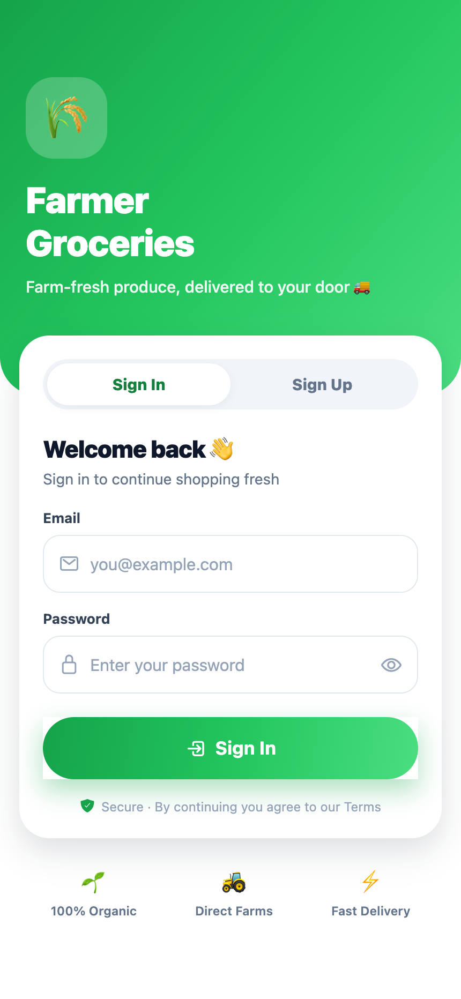
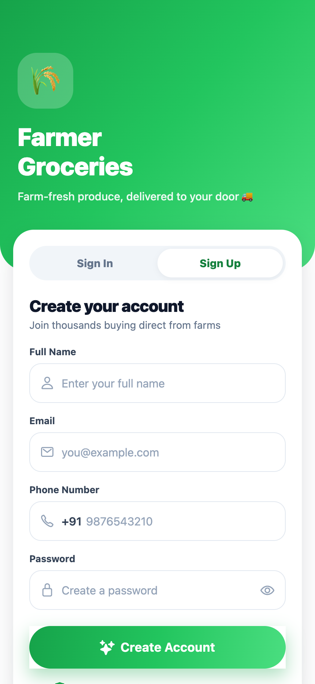
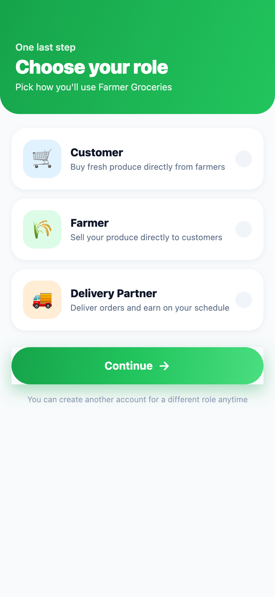
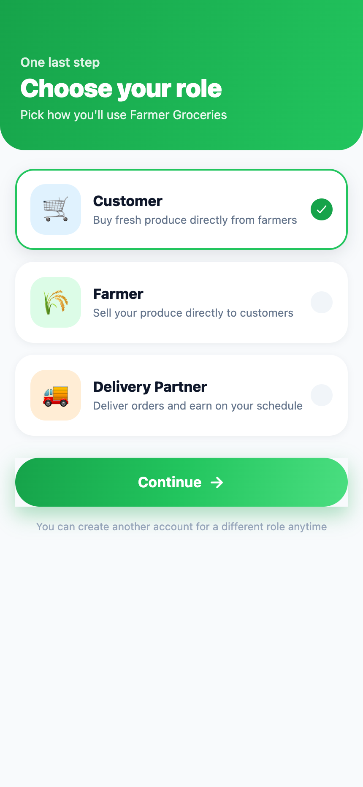
Figure 2.8 — Authentication and role selection. The segmented control switches between sign-in and sign-up in place; role selection is presented once and then persisted.
The login screen validates before it calls the network. Email format, password length and — for sign-up — name and a ten-digit mobile number are all checked locally, and each failure surfaces as a toast rather than an inline field error, which keeps the form compact on a small viewport:
const handleAuth = async () => {
if (!email || !password) return toast.show('Please enter email and password', 'error');
if (isSignUp && !name) return toast.show('Please enter your name', 'error');
if (isSignUp && !phone) return toast.show('Please enter your phone number', 'error');
if (!validateEmail(email.trim()))
return toast.show('Please enter a valid email address', 'error');
if (password.length < 6)
return toast.show('Password must be at least 6 characters', 'error');
if (isSignUp && !validatePhone(phone.replace(/\D/g, '').slice(-10)))
return toast.show('Enter a valid 10-digit mobile number', 'error');
/* … registration or sign-in … */
};
Listing 2.9 — Client-side credential validation (app/(auth)/login.tsx).
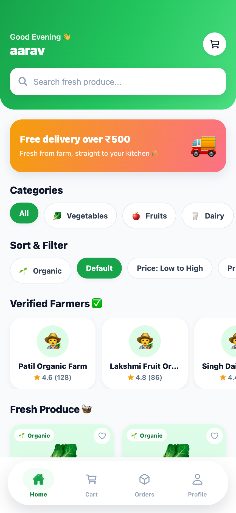
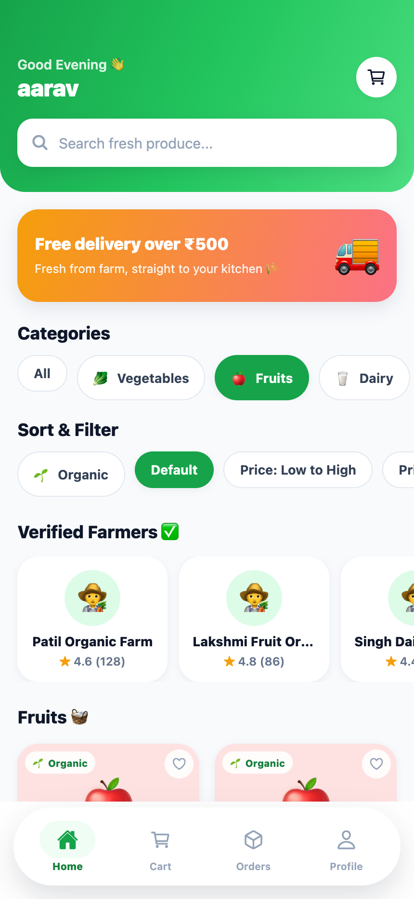
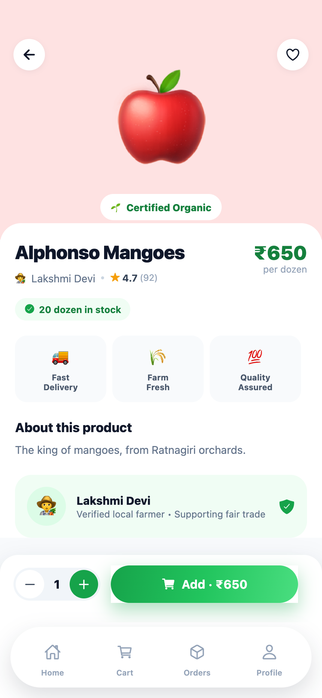
Figure 2.9 — Customer module: catalogue discovery, filtering and product detail.
Search, organic filtering and price sorting are composed as a single derived list rather than three separate passes over state, so the rendered grid is always a pure function of the loaded products and the four control values:
const filteredProducts = products
.filter((p) => p.name.toLowerCase().includes(searchQuery.toLowerCase())
|| (p.description ?? '').toLowerCase().includes(searchQuery.toLowerCase()))
.filter((p) => !organicOnly || p.isOrganic)
.sort((a, b) => (sortBy === 'price_asc' ? a.pricePerUnit - b.pricePerUnit
: sortBy === 'price_desc' ? b.pricePerUnit - a.pricePerUnit
: 0));
Listing 2.10 — Composed catalogue filtering and sorting (app/(customer)/home.tsx).
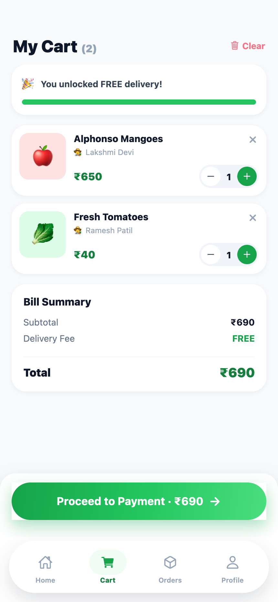
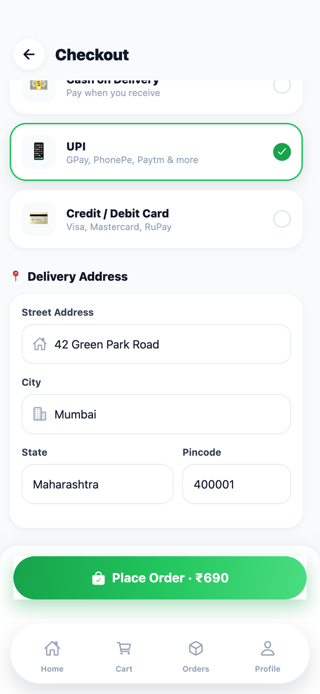
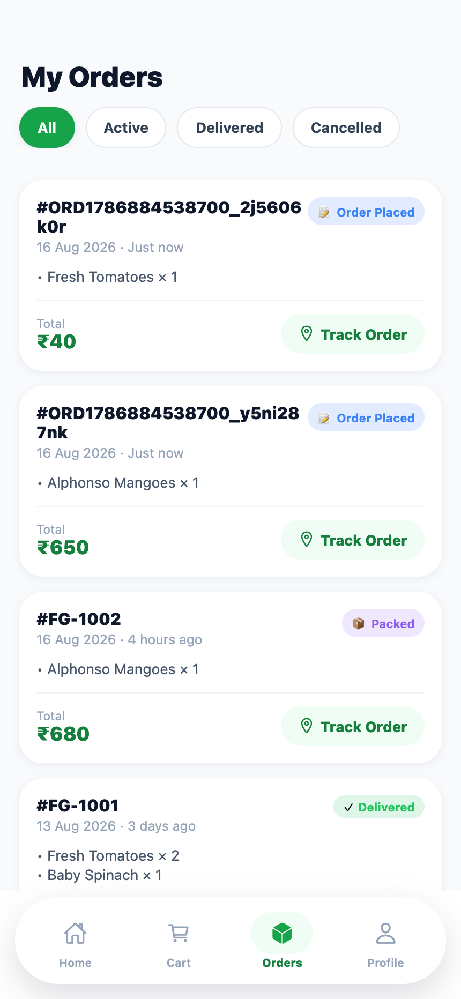
Figure 2.10 — Customer module: cart, checkout and order history. The cart in (a) contains produce from two different farmers; (c) shows the two resulting orders.
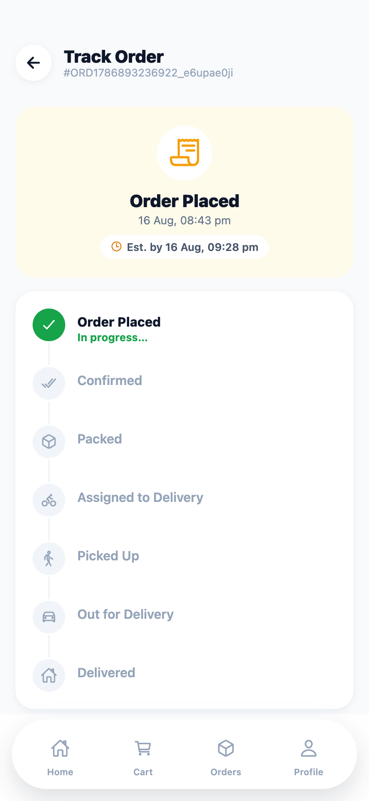
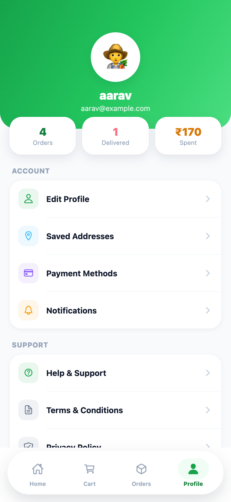
Figure 2.11 — Customer module: order tracking and profile management.
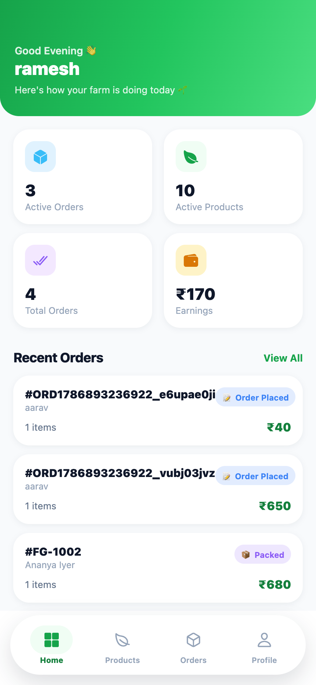
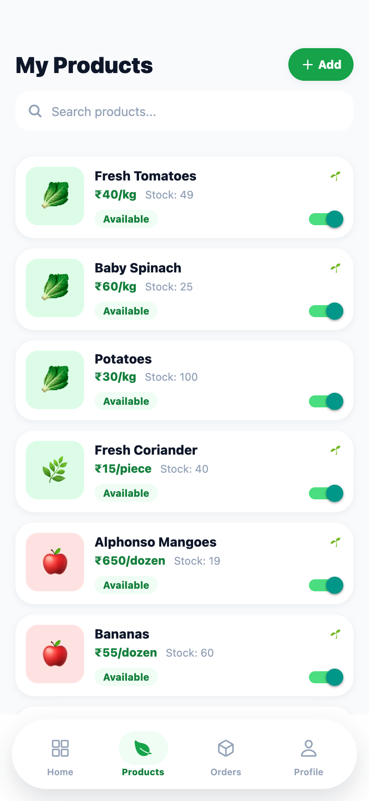
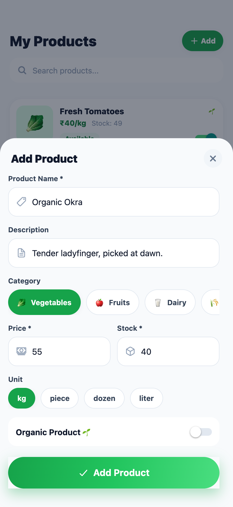
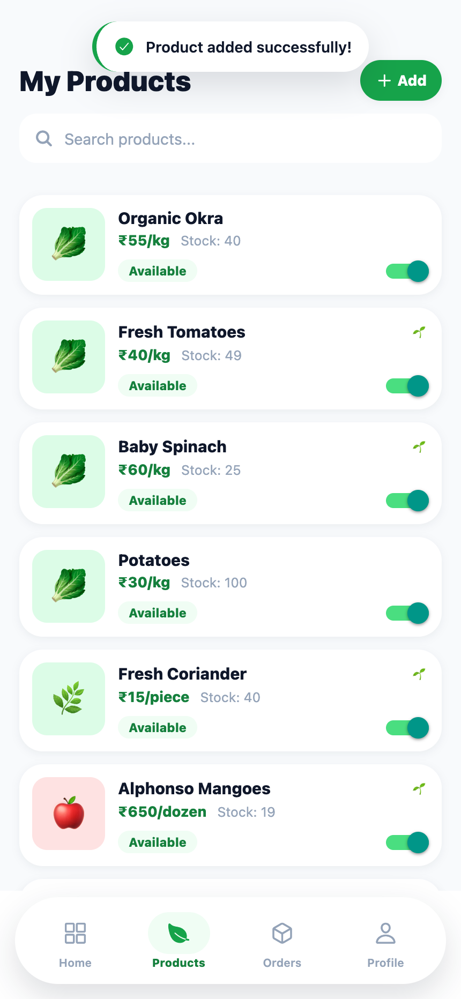
Figure 2.12 — Farmer module: business dashboard, inventory management and product creation. The dashboard in (a) reflects the two orders placed by the customer in Figure 2.10.
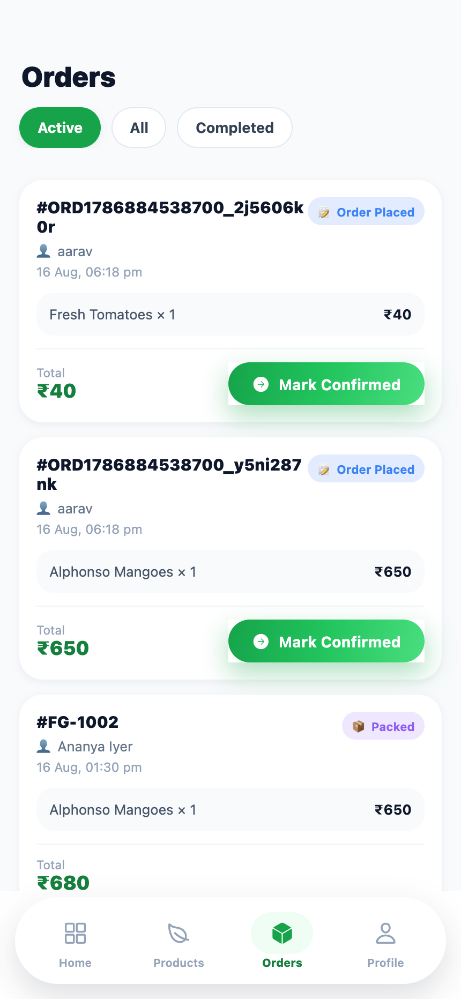
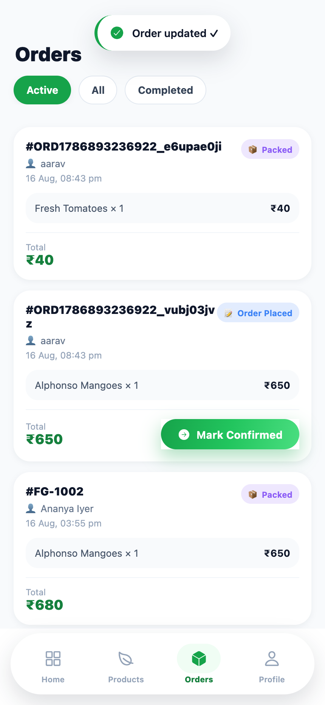
Figure 2.13 — Farmer module: order fulfilment and the boundary of farmer authority.
The bound on farmer authority is expressed as data, not as branching. A partial record maps only the two transitions a farmer may originate; any status absent from the map yields no action button at all, so the interface cannot offer an illegal transition:
const nextStatusMap: Partial<Record<OrderStatus, OrderStatus>> = {
placed: 'confirmed',
confirmed: 'packed',
};
const nextStatus = nextStatusMap[order.orderStatus];
/* … */
{nextStatus ? (
<Button label={`Mark ${ORDER_STATUS[nextStatus]?.label}`} size="sm"
icon="arrow-forward-circle"
onPress={() => handleUpdateStatus(order.id, order.orderStatus)} />
) : null}
Listing 2.11 — Transition table restricting farmer authority (app/(farmer)/orders.tsx).
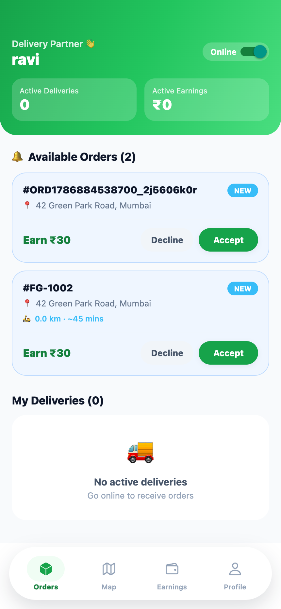
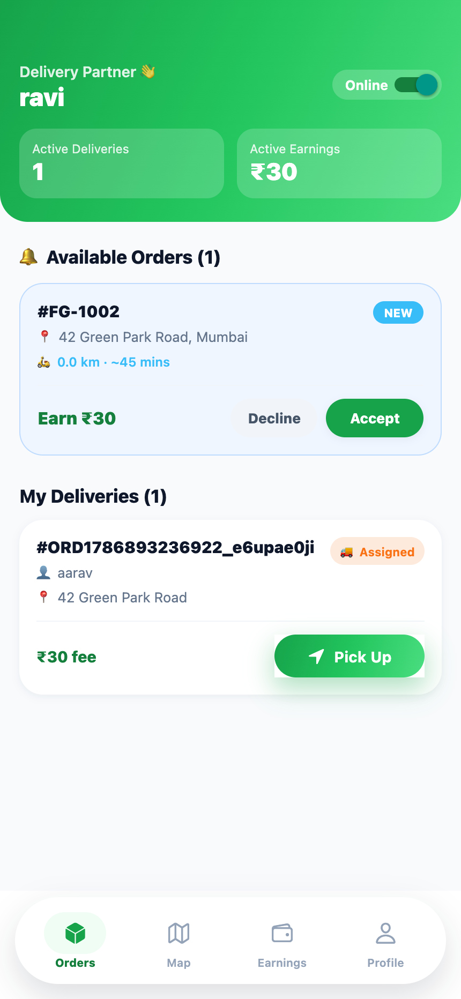
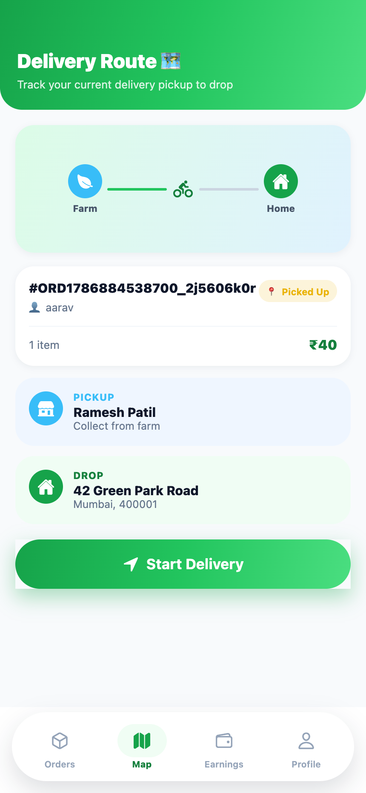
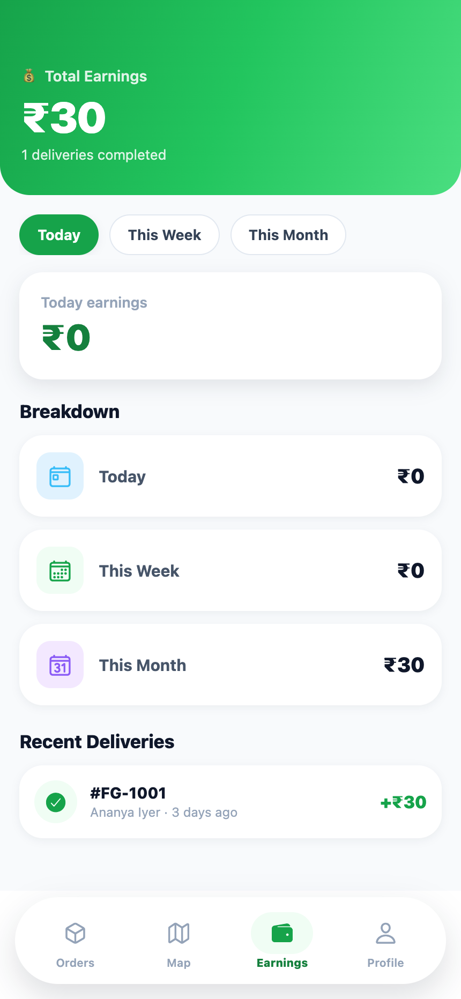
Figure 2.14 — Delivery module: job board, claimed deliveries, route view and earnings. The first job in (a) is the order packed by the farmer in Figure 2.13.
Acceptance is the moment at which a job becomes exclusive to one partner. The status transition and the partner stamp are applied together, after which the order no longer satisfies the unclaimed-job predicate on any other partner's board:
const handleAcceptOrder = (orderId: string) => {
Alert.alert('Accept Order', 'Accept this delivery?', [
{ text: 'Cancel', style: 'cancel' },
{ text: 'Accept', onPress: async () => {
await SupabaseService.updateOrderStatus(orderId, 'assigned');
await SupabaseService.updateOrder(orderId, { deliveryPartnerId: user?.id });
loadOrders();
toast.show('Order accepted 🚚', 'success');
} },
]);
};
// the board only offers jobs that are packed, unclaimed and not locally declined
const availableOrders = isAvailable
? orders.filter((o) => !o.deliveryPartnerId
&& o.orderStatus === 'packed'
&& !declinedOrderIds.has(o.id))
: [];
Listing 2.12 — Job acceptance and the unclaimed-job predicate (app/(delivery)/orders.tsx).
Earnings are derived rather than stored. A single pass over the partner's delivered orders accumulates four running totals against period boundaries computed once, which avoids three separate filtered traversals of the same array:
const stats = deliveredOrders.reduce((acc, order) => {
const c = new Date(order.createdAt);
acc.total += DELIVERY_FEE;
if (c >= startOfMonth) acc.month += DELIVERY_FEE;
if (c >= startOfWeek) acc.week += DELIVERY_FEE;
if (c >= startOfToday) acc.today += DELIVERY_FEE;
return acc;
}, { today: 0, week: 0, month: 0, total: 0 });
Listing 2.13 — Single-pass earnings aggregation (app/(delivery)/earnings.tsx).
Consistency across eighteen screens is maintained by a single token module. Palette entries,
gradients, corner radii and a cross-platform elevation helper are declared once as plain values, so
they can be consumed identically by NativeWind utility classes and by inline styles. The elevation
helper is the only place in the codebase that has to know that web renders shadows as
box-shadow while native platforms use shadow offsets and Android elevation:
const shadow = (y: number, blur: number, opacity: number, radius = 0): ViewStyle =>
Platform.select({
web: { boxShadow: `0px ${y}px ${blur}px rgba(15, 23, 42, ${opacity})` },
default: {
shadowColor: '#0f172a',
shadowOffset: { width: 0, height: y },
shadowOpacity: opacity,
shadowRadius: radius || blur / 2,
elevation: y + 2,
},
}) as ViewStyle;
export const shadows = { sm: shadow(2, 8, 0.06), md: shadow(6, 18, 0.10), lg: shadow(12, 30, 0.14) };
export const radii = { sm: 10, md: 16, lg: 22, xl: 28, pill: 999 };
Listing 2.14 — Cross-platform elevation tokens (src/theme.ts).
The system under test is a client application whose correctness is dominated by two concerns: whether state changes made by one role become correctly visible to the others, and whether invalid input is refused before it reaches persistence. Neither concern is well served by unit tests of individual functions in isolation, because both are properties of a sequence of interactions across several screens. The strategy adopted therefore places its weight on automated end-to-end testing against the running application, supported by static verification.
Three complementary levels were applied:
tsc --noEmit under strict. Because the domain model uses string-literal
unions for roles, order statuses and product categories, a large class of defects — an unhandled
status, a mistyped category, a nullable value dereferenced without a guard — is rejected at this
level before any test is run.tests/e2e/walkthrough.mjs, signs in as
each of the three roles in turn and performs the complete business cycle: a customer places an
order, the same order is confirmed and packed by the farmer, and the same order is then claimed
and advanced by a delivery partner. This exercises cross-role propagation directly, because each
role observes state written by the previous one.tests/e2e/validation.mjs, deliberately supplies invalid
input at every guarded boundary — malformed credentials, an unselected role, a sub-minimum cart, a
blank address, an invalid pincode, a product created with mandatory fields empty — and asserts
that the application refuses the operation and reports the specific reason. This suite also
verifies two stateful properties that are easy to regress: that the cart survives an application
restart, and that navigating directly to another role's URL is redirected.Both suites exit with a non-zero status when any case fails, so they can be wired into a
continuous integration pipeline unchanged, and both are runnable by any reader of the repository
with npm test once npm run web is serving the application.
Interaction with the application is performed through DOM-level event dispatch rather than
synthetic mouse input at coordinates. This was a necessary adaptation: react-native-web routes
presses through its own responder system, which does not consistently observe input synthesised by
the DevTools Protocol on every screen. Dispatching the full pointer and mouse event chain to the
nearest pressable ancestor of a located text node reproduces a genuine user press reliably.
Controlled text inputs are driven through the underlying value setter followed by an
input event, which is the mechanism React itself observes.
| Tool / component | Version | Purpose in the test process |
|---|---|---|
| TypeScript compiler | 5.9 | Static type verification of all 48 source files in strict mode. |
| Expo / Metro dev server | SDK 54 | Serves the web target under test at localhost:8081. |
| Google Chrome (headless) | Current stable | Execution host for the application under test. |
| Puppeteer Core | 23.x | Drives Chrome over the DevTools Protocol; performs presses, text entry, navigation, dialogue handling and screen capture. |
tests/e2e/walkthrough.mjs | In repository | 25-case functional scenario across all three roles; run with npm run test:e2e. Captures the 22 screenshots reproduced in §2.5 when E2E_SHOTS=1 is set. |
tests/e2e/validation.mjs | In repository | 15 negative and stateful assertions; run with npm run test:validation. |
tests/e2e/helpers.mjs | In repository | Shared press, text-entry, sign-in and assertion helpers used by both suites. |
| Device emulation | 430 × 932 @ 2× | Handset-equivalent viewport for both capture and interaction. |
Table 3.1 — Test environment and tooling.
Forty test cases were executed: twenty-five functional cases tracing the complete order lifecycle across the three roles, and fifteen validation cases probing the guarded boundaries. All inputs, expected outputs and observed statuses below are taken from the recorded execution logs of the two automated suites; no result is asserted from inspection of the source alone.
| ID | Description | Input | Expected output | Status |
|---|---|---|---|---|
| TC-F01 | Unauthenticated launch is redirected to sign-in | Cold start, empty device storage | Login screen is presented; no protected route is reachable | Pass |
| TC-F02 | Sign-up mode reveals the additional identity fields | Press Sign Up on the segmented control | Full name and phone number fields appear; primary action becomes Create Account | Pass |
| TC-F03 | Valid credentials sign the user in | aarav@example.com / test1234 | Session established; user without a role is routed to role selection | Pass |
| TC-F04 | Role selection routes to the correct workspace | Select Customer, press Continue | Role persisted; customer catalogue presented with the customer tab bar | Pass |
| TC-F05 | Catalogue loads products and verified farmers | Customer home on first load | Ten products in a two-column grid; verified-farmer carousel with ratings | Pass |
| TC-F06 | Category filter narrows the catalogue | Select the Fruits chip | Only fruit-category products remain; heading changes to Fruits | Pass |
| TC-F07 | Product detail opens with stock and pricing | Open Alphonso Mangoes | Detail screen shows ₹650 per dozen, in-stock badge, organic marker, quantity stepper | Pass |
| TC-F08 | Add to cart from the product detail screen | Press Add · ₹650 | Line added to the cart; badge increments; user returned to the catalogue | Pass |
| TC-F09 | Cart accepts produce from a second farmer | Open Fresh Tomatoes (₹40/kg), add one unit | Cart holds two lines belonging to two different farmers | Pass |
| TC-F10 | Cart totals and free-delivery state are correct | Cart containing ₹650 + ₹40 | Subtotal ₹690; delivery fee shown as FREE; total ₹690; progress bar complete | Pass |
| TC-F11 | Checkout accepts a payment method and a valid address | UPI; 42 Green Park Road, Mumbai, Maharashtra, 400001 | UPI card marked selected; address accepted; Place Order · ₹690 enabled | Pass |
| TC-F12 | Order placement splits the cart by farmer | Press Place Order | Two orders created — ₹650 and ₹40 — each against its own farmer; cart cleared | Pass |
| TC-F13 | Order history lists both orders newest first | Navigate to Orders | Both orders listed with Order Placed status pills, totals and a Track action | Pass |
| TC-F14 | Tracking timeline reflects the current stage | Track the ₹40 order | Stage 1 of 7 marked complete and annotated In progress…; estimated delivery 45 minutes after placement | Pass |
| TC-F15 | Customer profile presents identity and actions | Navigate to Profile | Name and email shown; account and support groups rendered; sign-out available | Pass |
Table 3.2 — Functional test cases: authentication and customer module.
| ID | Description | Input | Expected output | Status |
|---|---|---|---|---|
| TC-F16 | Farmer dashboard aggregates the newly placed orders | Sign in as ramesh@example.com, select Farmer | Active orders 3, active products 10, total orders 4, earnings ₹170; both new orders appear under Recent Orders | Pass |
| TC-F17 | Inventory lists owned products with stock state | Navigate to Products | All products listed with price per unit, stock, organic marker and an availability switch | Pass |
| TC-F18 | Product creation adds to inventory | Organic Okra, ₹55, stock 40, category Vegetables | Success toast; sheet dismissed; product appears at the head of the inventory list | Pass |
| TC-F19 | Order queue offers only the permitted next transition | Order in placed | Single action Mark Confirmed; no other transition offered | Pass |
| TC-F20 | Confirm transition is applied and history appended | Press Mark Confirmed, accept the dialogue | Status pill becomes Confirmed; action becomes Mark Packed | Pass |
| TC-F21 | Packing ends farmer authority over the order | Press Mark Packed, accept the dialogue | Status pill becomes Packed; no further action offered to the farmer | Pass |
| TC-F22 | Packed order becomes visible on the delivery job board | Sign in as ravi@example.com, select Delivery Partner | Job board lists the packed order as available with drop address and an Earn ₹30 label | Pass |
| TC-F23 | Acceptance claims the job exclusively | Press Accept, confirm | Order status becomes assigned, partner identifier stamped, job moves to My Deliveries and leaves the available list | Pass |
| TC-F24 | Delivery progression and route resolution | Press Pick Up; open the Map tab | Status becomes picked up; route screen resolves the in-flight delivery and shows farm pickup and customer drop with the order value | Pass |
| TC-F25 | Earnings aggregate delivered work by period | Open the Earnings tab | Total ₹30 over one completed delivery; today, week and month buckets computed against period boundaries; recent delivery listed | Pass |
Table 3.3 — Functional test cases: farmer and delivery modules.
| ID | Description | Input | Expected output (observed message) | Status |
|---|---|---|---|---|
| TC-V01 | Malformed email rejected at sign-in | “notanemail” / test1234 | “Please enter a valid email address”; no network call | Pass |
| TC-V02 | Short password rejected | aarav@example.com / “abc” | “Password must be at least 6 characters” | Pass |
| TC-V03 | Sign-up without a name rejected | Name blank, valid email and password | “Please enter your name” | Pass |
| TC-V04 | Invalid Indian mobile number rejected | Phone “12345” | “Enter a valid 10-digit mobile number” | Pass |
| TC-V05 | Continue without a role selection rejected | Press Continue with nothing selected | “Please select a role to continue”; user remains on role selection | Pass |
| TC-V06 | Selected role lands on the correct workspace | Select Customer, continue | Customer catalogue rendered (“Fresh Produce” section present) | Pass |
| TC-V07 | Direct URL into another role's group is refused | Navigate to /(farmer)/dashboard as a customer | Guard redirects to the customer catalogue | Pass |
| TC-V08 | Checkout blocked below the minimum order value | Cart containing one item at ₹15 | “Add ₹85 more to checkout”; checkout not entered | Pass |
| TC-V09 | Checkout permitted once the minimum is met | Cart topped up to ₹665 | Checkout screen presented with the delivery address form | Pass |
| TC-V10 | Order rejected with an incomplete address | All address fields blank | “Please fill in all address fields”; no order created | Pass |
| TC-V11 | Order rejected with a malformed pincode | Pincode “0400” | “Enter a valid 6-digit pincode”; no order created | Pass |
| TC-V12 | Cart survives an application restart | Full page reload with a populated cart | Cart rehydrated from device storage with both lines intact | Pass |
| TC-V13 | Free-delivery waiver applied above the threshold | Cart subtotal ₹665 | Delivery fee rendered as FREE in the bill summary | Pass |
| TC-V14 | Farmer role lands on the farmer dashboard | Sign in, select Farmer | Farmer dashboard rendered with the farm greeting | Pass |
| TC-V15 | Product creation rejected with mandatory fields empty | Submit the creation sheet with no input | “Please fill all required fields”; sheet remains open, nothing persisted | Pass |
Table 3.4 — Validation and negative test cases.
Figure 3.1 reproduces the console output of the functional walkthrough. Each captured screen is written as evidence at the point in the scenario at which it was reached, and each dialogue interception is logged, so the transcript is a complete record of what the automation did rather than a summary of it.
▶ Login screen ▶ Track order
📸 01-login.png 📸 11-track-order.png
▶ Sign-up form ▶ Customer profile
📸 02-signup.png 📸 12-customer-profile.png
▶ Sign in as customer ▶ Sign in as farmer
📸 03-role-select.png 📸 13-farmer-dashboard.png
▶ Select Customer role ▶ Farmer products
📸 04-role-selected.png 📸 14-farmer-products.png
📸 05-customer-home.png ▶ Add product
▶ Category filter 📸 15-farmer-add-product.png
📸 06-customer-home-category.png 📸 16-farmer-products-added.png
▶ Product detail ▶ Farmer orders
📸 07-product-detail.png 📸 17-farmer-orders.png
▶ Second product 💬 Update Order
▶ Cart 💬 Update Order
📸 08-cart.png 📸 18-farmer-orders-packed.png
▶ Checkout ▶ Sign in as delivery partner
📸 09-checkout.png 📸 19-delivery-orders.png
▶ Place order ▶ Accept and advance delivery
📸 10-customer-orders.png 💬 Accept Order
📸 20-delivery-my-deliveries.png
💬 Update Status
▶ Delivery route
📸 21-delivery-route.png
▶ Delivery earnings
📸 22-delivery-earnings.png
✅ Screenshots written — 22 captures, 0 failed steps
The validation suite reported 15 passed, 0 failed on its final run, with each
assertion matching against the specific message rendered by the application rather than merely
against the absence of a state change.
Cross-role propagation is correct and immediate. The most valuable result of the walkthrough is not that any single screen renders, but that a single order object is observed correctly by three different users in sequence. Figure 3.2 traces the order created in TC-F12 through every subsequent assertion. Each arrow is a transition performed by one role and independently observed by the next.
Derived values were correct at every observation point. The farmer dashboard independently recomputed its indicators after the customer's orders were created and reported active orders 3, total orders 4 and earnings ₹170 — earnings correctly excluding the two undelivered orders and counting only the completed one. The delivery earnings screen likewise reported ₹30 total against one completed delivery, with the month bucket populated and the today and week buckets at zero, which is the correct outcome for a delivery dated three days earlier. These figures were not asserted in advance; they were read back from the running application and checked against the rules in Table 2.4.
Rule enforcement is consistent because the rules are centralised. The minimum order value,
free-delivery threshold and delivery fee were each observed to act identically in the cart, at
checkout and in the earnings calculation, which is a direct consequence of their being defined once
in src/constants/index.ts rather than restated per screen.
Authority partitioning held under direct attack. TC-V07 navigated straight to a farmer URL while authenticated as a customer and was redirected, confirming that the guard operates on the URL segment rather than merely hiding navigation controls.
Two issues were identified while constructing the test harness, and both were traced to the interaction between react-native-web and synthesised input rather than to application logic. First, presses synthesised as coordinate-based mouse input were ignored on screens reached by a router replacement; dispatching the full pointer and mouse event chain to the pressable ancestor resolved this. Second, controlled text inputs did not receive focus from synthesised clicks on the checkout form, so keystrokes were discarded; driving the value through React's observed setter resolved this. Both findings are recorded here because they materially affect anyone attempting to automate a react-native-web application, and because the first run of the walkthrough failed at the checkout step precisely for the second reason — the empty address form is visible in that run's captured evidence.
| Property | Measurement | Method and remarks |
|---|---|---|
| Static type errors | 0 | npx tsc --noEmit across 48 files in strict mode; clean exit. |
| Web bundle composition | 1,464 modules | Reported by Metro when bundling expo-router/entry.js for the web target. |
| Incremental bundle time | 0.79 s | Metro warm rebuild of the web bundle on the development machine. |
| Screen transition responsiveness | No observable stall | All 25 functional cases completed within their allotted settle windows; no step required a retry. |
| Catalogue filtering | Client-side, single pass | Search, organic filter and sort are composed over the loaded array; only category changes re-query the source. |
| State restoration | Correct across cold start | Cart, user and role rehydrate from device storage; Date fields revived rather than left as strings. |
| Cross-platform rendering | Verified on web at 430 × 932 | Android and iOS render through the same component tree; the responsive shell constrains the layout to a phone-width column on wide viewports. |
Table 3.5 — Non-functional observations and measurements.
| Test category | Executed | Passed | Failed | Pass rate |
|---|---|---|---|---|
| Functional — authentication and customer | 15 | 15 | 0 | 100% |
| Functional — farmer and delivery | 10 | 10 | 0 | 100% |
| Validation and negative | 15 | 15 | 0 | 100% |
| Total | 40 | 40 | 0 | 100% |
Static verification (tsc --noEmit) | 48 files | 48 | 0 | 100% |
Table 3.6 — Consolidated test execution summary.
Three limitations should be stated plainly. The committed suites are integration tests; there is no unit test runner in the project, so the pure helper functions — Haversine distance, currency and date formatting, cancellation eligibility — are covered only indirectly through the interfaces that call them. Testing was performed against the web target only; while Android and iOS execute the same component tree, platform-specific behaviour such as haptic feedback and native modal presentation was not exercised automatically. Finally, the suites ran against the on-device data layer, so the Supabase-backed branch of each service method — its query construction and its snake_case-to-camelCase mapping — was verified statically by the compiler but not exercised at run time. All three gaps are carried forward into §6.3 and §6.4.
The application is developed and executed through the Expo managed workflow, which means no native toolchain is required for day-to-day development: the JavaScript bundle is served by Metro and executed either inside the Expo Go client on a physical device or in a browser through react-native-web. A native toolchain becomes necessary only when producing store-ready binaries, and even then the build can be delegated to Expo Application Services rather than run locally.
| Component | Version / specification | Notes |
|---|---|---|
| Development host | macOS (Darwin 25.6) | Any macOS, Linux or Windows host running Node 18 or later is sufficient. |
| Node.js | 22.14.0 | Minimum supported version is 18. |
| npm | 10.9.2 | Yarn or pnpm may be substituted. |
| Expo CLI | Bundled with SDK 54 | Invoked through npx expo; no global installation required. |
| Metro bundler | Expo default | Serves http://localhost:8081 and exposes the QR code for device clients. |
| Android runtime | Expo Go on Android 7.0+ | Package identifier com.farmergroceries.app. |
| iOS runtime | Expo Go on iOS 15.1+ | Bundle identifier com.farmergroceries.app; tablet layout supported. |
| Web runtime | Any modern browser | Rendered through react-native-web; constrained to a 430 px phone column on wide viewports. |
| Backend | Optional | The on-device data layer is used by default; a Supabase project is enabled purely by environment variables. |
Table 4.1 — Execution environment specification.
The repository runs without any additional configuration. Three commands take a clean machine to a running application:
git clone https://github.com/Vijaygaurav2004/Farmer_groceries.git cd Farmer_groceries npm install npm start # Metro starts and prints a QR code
Scanning the QR code with Expo Go launches the application on a physical handset. To target a
specific platform directly, the package scripts npm run android,
npm run ios and npm run web are provided; the last of these is the target
used for the automated testing described in Chapter 3. Figure 4.1 shows the bundler output from the
session in which the report screenshots were captured.
$ npx expo start --web --port 8081 Starting project at /Users/…/Farmer_groceries Starting Metro Bundler Waiting on http://localhost:8081 Logs for your project will appear below. Web Bundled 791ms node_modules/expo-router/entry.js (1464 modules) LOG [web] Logs will appear in the browser console
On first launch the application resolves its persistence target automatically, because
isSupabaseConfigured evaluates to false when no Supabase URL is present in the
environment; the on-device data layer then serves every read and write, so the catalogue, farmer
profiles and order history are available immediately and remain so without connectivity. Any email
address with a password of six characters or more signs in successfully, after which a role may be
chosen; signing out and signing in with a different address allows all three roles to be exercised
from a single device.
To run against real multi-user infrastructure, a Supabase project is created and its URL and
anonymous key are written to .env:
cp .env.example .env # then edit .env EXPO_PUBLIC_SUPABASE_URL=https://<project-ref>.supabase.co EXPO_PUBLIC_SUPABASE_ANON_KEY=<anon-key>
Five tables are required — users, farmers, products,
orders and reviews — with column names in snake_case matching the mapping
performed in the service layer, and a public uploads storage bucket. Row Level Security
should be enabled on every table before any real deployment, with policies that permit a user to
read and write only their own records, permit a farmer to manage only their own products, permit any
authenticated user to read available products, and permit a delivery partner to read only the orders
assigned to them or awaiting assignment. Restarting Metro after editing .env switches
every service call to the remote branch; no application code changes.
| Target | Command | Output and distribution |
|---|---|---|
| Android (testing) | eas build --platform android --profile preview | Installable APK for sideloading onto test devices. |
| Android (store) | eas build --platform android --profile production | Android App Bundle for Google Play, signed by EAS-managed credentials. |
| iOS (store) | eas build --platform ios --profile production | Signed archive for App Store Connect; requires an Apple Developer account. |
| Web | npx expo export --platform web | Static bundle in dist/, deployable to any static host or CDN. |
| Over-the-air update | eas update --branch production | Ships JavaScript-only changes to installed clients without a store review cycle. |
Table 4.2 — Deployment targets and build commands.
Two configuration points matter for a release. Environment variables prefixed
EXPO_PUBLIC_ are inlined into the client bundle at build time, so the Supabase
anonymous key is the only key that may appear there; the service-role key must never be
placed in a client build, and Row Level Security is what makes the anonymous key safe to ship.
Second, app.json already declares the bundle identifiers, the portrait orientation
lock, the farmer-groceries deep-link scheme and typed routes, so no additional native
configuration is required before a first build.
The complete visual record of the running application is presented in §2.5, where the twenty-two captures are grouped by module as Figures 2.8 to 2.14. They were taken during a single uninterrupted session in which one order was carried from placement through fulfilment to delivery, so they function as a demonstration sequence as well as an interface reference. Readers reviewing the application for the first time are directed to Figure 2.10 (the customer placing an order), Figure 2.13 (the same order being packed by the farmer) and Figure 2.14 (the same order being claimed and delivered), which together evidence the end-to-end business cycle in three images.
A screen recording of the complete three-role demonstration accompanies this report:
| Item | Location |
|---|---|
| Demonstration video | https://youtu.be/nWjFOKCmPD8 |
| Duration | 13 minutes 34 seconds |
| Contents | Sign-up and role selection · customer catalogue, cart and checkout · order tracking · farmer inventory and fulfilment · delivery acceptance, route and earnings |
| Source repository | https://github.com/Vijaygaurav2004/Farmer_groceries |
The project has been maintained under Git for its entire duration and is hosted publicly on
GitHub. The history is not a single upload: it comprises forty-three commits distributed across
twenty-eight weeks, each carrying a descriptive subject line that identifies the behaviour it
introduced. Development proceeded on the main branch.
| Repository attribute | Value |
|---|---|
| Repository URL | https://github.com/Vijaygaurav2004/Farmer_groceries |
| Default branch | main |
| Total commits | 43 |
| Most recent commit | 4dad21f — 2 August 2026, feat: redesign delivery orders, route map, and earnings |
| Active period | 28 weeks |
| Contributors | 5, as listed on the repository's GitHub page |
| Language composition | TypeScript 96.9% · JavaScript 1.6% · other 1.5% (GitHub analysis) |
| Automated test suites | tests/e2e/ — 40 cases, runnable with npm test |
| First commit | a8bd974 — 22 January 2026 |
Figures 5.1 to 5.5 are captured directly from the public repository. Figure 5.1 is the landing page, showing the branch, the file tree, the commit count and the language composition. Figures 5.2 to 5.5 reproduce the complete commit history — all forty-three commits, each with its abbreviated hash, author and date — across the two pages GitHub paginates it over. Figure 5.6 plots the same data by month, which makes the shape of the effort visible: a long steady period of incremental feature and refactoring work from January through July, followed by a concentrated final phase in which the on-device data layer was completed and the entire interface was redesigned screen group by screen group.
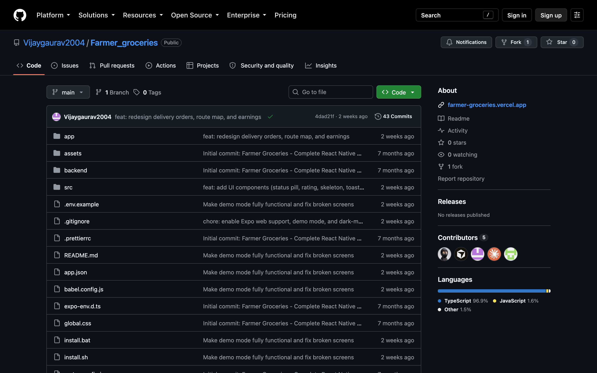
main branch,
43 commits, 5 contributors and a TypeScript-dominant language breakdown.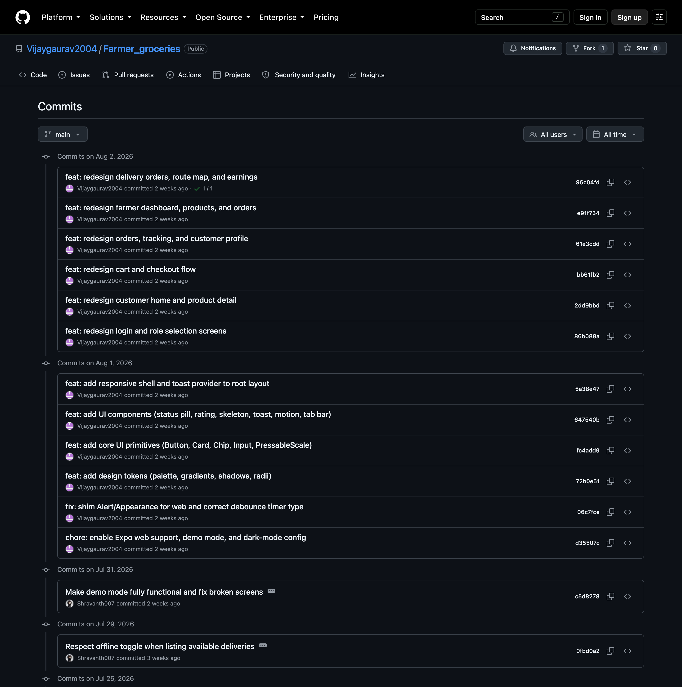
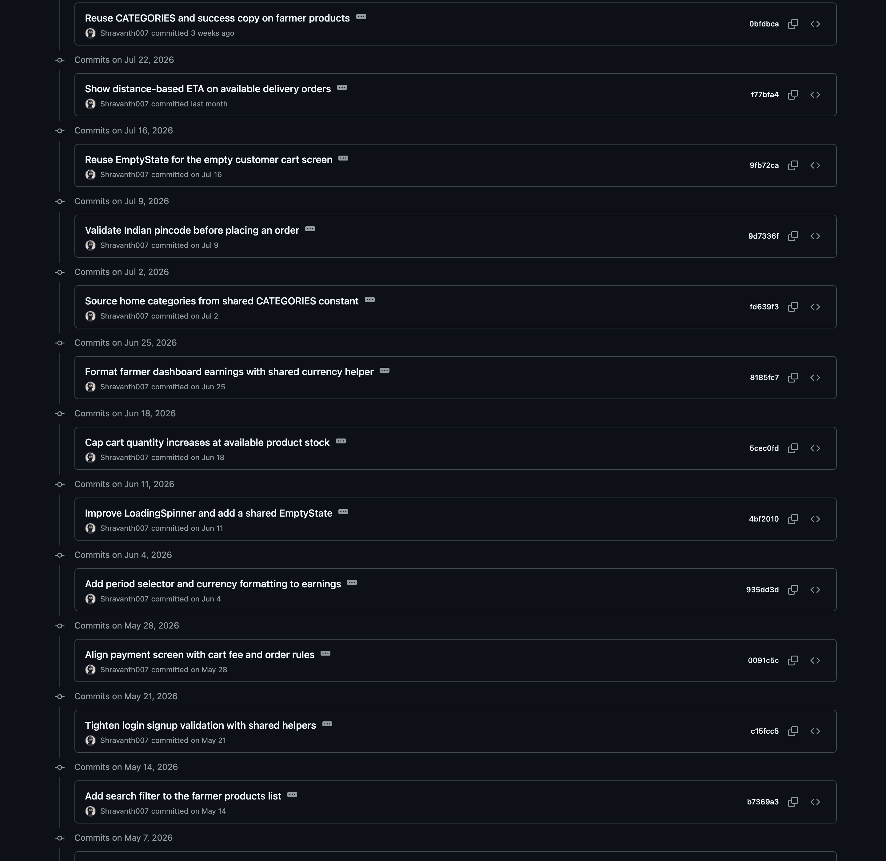
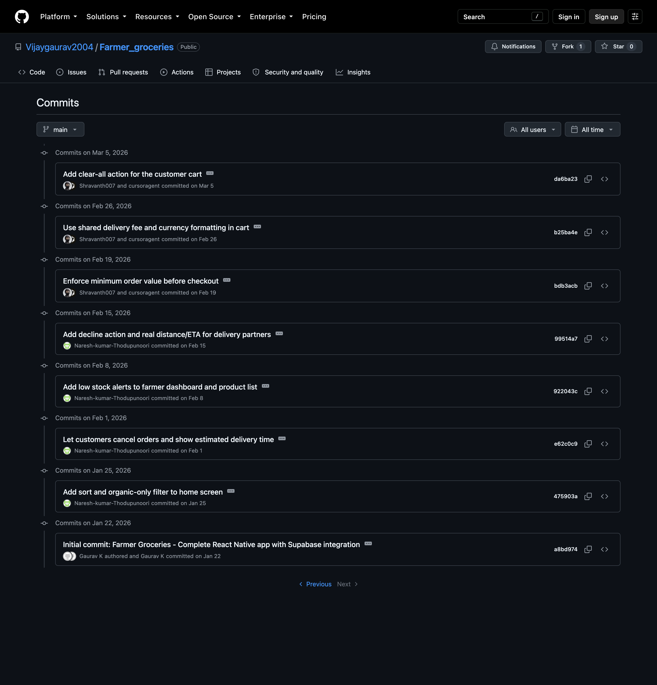
The table below is derived from the commit log rather than reconstructed from memory: every row corresponds to commits actually recorded in the period it covers, so the summary and the repository cannot disagree.
| Week | Period (2026) | Commits | Work completed |
|---|---|---|---|
| 1 | 20 – 26 Jan | 2 | Project baseline established: three role workspaces, Expo Router structure, Supabase service layer and type model. Catalogue sorting and an organic-only filter added. |
| 2 – 3 | 27 Jan – 8 Feb | 2 | Customer-initiated cancellation with an eligibility rule; estimated delivery time surfaced on tracking. Low-stock alerting introduced on the farmer dashboard and inventory list. |
| 4 – 5 | 9 – 22 Feb | 2 | Delivery partners gained a decline action and genuine Haversine distance with a derived ETA. Minimum order value enforced at checkout. |
| 6 – 7 | 23 Feb – 8 Mar | 2 | Delivery fee and currency formatting centralised into shared constants and helpers; clear-all action added to the cart. |
| 8 – 9 | 9 – 22 Mar | 2 | Time-of-day greeting on the customer home screen; add-to-cart blocked for out-of-stock products. |
| 10 – 11 | 23 Mar – 5 Apr | 2 | Search-aware empty states for the catalogue; status filter tabs added to the customer order history. |
| 12 – 13 | 6 – 19 Apr | 2 | Order history moved onto shared date and currency helpers; support contacts and version string wired from the application configuration module. |
| 14 – 15 | 20 Apr – 3 May | 2 | Phone number validation on profile edit; free-delivery threshold messaging and progress indicator added to the cart. |
| 16 – 17 | 4 – 17 May | 2 | Farmer dashboard greeting; search filter added to the farmer inventory list. |
| 18 – 19 | 18 – 31 May | 2 | Sign-up and sign-in validation consolidated onto shared validators; checkout screen aligned with the cart's fee and minimum-order rules. |
| 20 – 21 | 1 – 14 Jun | 2 | Period selector and currency formatting on the delivery earnings screen; loading spinner improved and a shared empty-state component introduced. |
| 22 – 23 | 15 – 28 Jun | 2 | Cart quantity increases capped at available stock; farmer dashboard earnings moved onto the shared currency helper. |
| 24 – 25 | 29 Jun – 12 Jul | 2 | Catalogue categories sourced from the shared constant; Indian pincode validation enforced before order placement. |
| 26 | 13 – 19 Jul | 1 | Shared empty state reused for the empty cart screen, removing bespoke markup. |
| 27 | 20 – 26 Jul | 2 | Distance-based ETA surfaced on the delivery job board; farmer product screen reuses shared categories and success messages. |
| 28 | 27 Jul – 2 Aug | 14 | Offline toggle respected when listing available deliveries. On-device data layer completed so every screen works without a network connection, and broken screens repaired. Expo web support enabled; Alert and Appearance shimmed for the browser. Design token module, twelve UI primitives, responsive shell and toast provider introduced, followed by a full visual redesign of all three role workspaces, screen group by screen group. |
Table 5.1 — Weekly progress summary derived from the commit log.
The table below records the supervisory reviews held during the capstone phase. Dates and feedback are to be completed from the review record; the final column indicates where in this report the resulting change can be verified.
| Review | Date | Key feedback received | Action taken and evidence |
|---|---|---|---|
| R1 Design review | [DD/MM/2026] | [Feedback recorded at review 1] | [Action taken] — see §2.1 |
| R2 Mid-term review | [DD/MM/2026] | [Feedback recorded at review 2] | [Action taken] — see §2.3 |
| R3 Pre-final review | [DD/MM/2026] | [Feedback recorded at review 3] | [Action taken] — see Chapter 3 |
| R4 Final demonstration | [DD/MM/2026] | [Feedback recorded at the final demonstration] | [Action taken] — see Chapter 6 |
Table 5.2 — Review schedule and feedback log.
This capstone delivered a working cross-platform mobile marketplace that removes the intermediaries between agricultural producers and the households that buy from them. The system is a single React Native codebase of forty-eight TypeScript source files — approximately 5,400 lines — organised into eighteen routed screens, twelve reusable interface components and a thirty-operation service façade, and it runs on Android, iOS and the web from that one source tree.
Three design decisions shaped the result more than any others. The first was to make the route group the unit of authorisation: because Expo Router derives navigation from the directory layout, each role's screens live in a physically separate directory and a single guard in the root layout is sufficient to enforce the boundary between them, with no per-screen permission checks anywhere in the codebase. The second was to partition authority over the order lifecycle across roles rather than concentrate it: a farmer may only advance an order to packed and a delivery partner may only take it from there, which makes an illegal transition unrepresentable in the interface rather than merely discouraged. The third was to put a façade in front of persistence, so that a single configuration flag chooses between a hosted Supabase backend and a on-device data layer without a line of screen code changing — the decision that lets the application keep working whether or not the network does.
The build was validated rather than merely exercised. The whole tree compiles cleanly under
strict TypeScript, and forty automated test cases — twenty-five functional, fifteen validation —
are committed to the repository under tests/e2e/ and execute against the running
application through a real browser; all forty pass. The functional
suite is a genuine integration test: one order was carried from a customer's cart, through a
farmer's fulfilment queue, into a delivery partner's job board and on to pickup, with each role
independently observing the state the previous role had written.
| # | Objective (from §1.3) | Outcome | Assessment |
|---|---|---|---|
| O1 | Single identity specialising into three guarded workspaces | Achieved | Role persisted to both the user record and device storage; guard verified under direct URL attack (TC-V07). |
| O2 | Complete customer purchase journey | Achieved | Seven screens from catalogue to tracking; fifteen functional cases passed including per-farmer order splitting. |
| O3 | Farmer inventory and fulfilment console | Achieved | Dashboard analytics, product creation, visibility toggling and guarded transitions all verified (TC-F16 – TC-F21). |
| O4 | Delivery partner workflow | Achieved | Job board with Haversine ETA, exclusive claiming, route view and period earnings verified (TC-F22 – TC-F25). |
| O5 | Substitutable persistence behind one interface | Achieved | Thirty operations dual-dispatched; the on-device branch maintains genuine mutable state including stock decrement and history append. |
| O6 | End-to-end validation with reproducible evidence | Achieved | Zero type errors; 40/40 committed test cases pass; 22 screenshots captured as evidence from a single continuous session. |
Table 6.1 — Objective-wise achievement assessment.
Beyond the stated objectives, three outcomes are worth recording. The design system that
emerged in the final phase — a token module feeding twelve components — is what makes eighteen
screens look like one product rather than eighteen; changing the brand palette is now a single-file
edit. The offline-first data layer means the application degrades to nothing when connectivity
fails — every screen keeps working — and it is what allowed the entire test suite in Chapter 3 to run
unattended. And the committed test suites are reusable rather than one-off: npm test
re-runs the whole three-role cycle after any change.
The following limitations are stated deliberately, because a report that omits them is less useful than one that records them.
The roadmap below is ordered by the ratio of user value to implementation cost, and the first tier is what would be required to move from a working build to a pilot deployment.
| Priority | Enhancement | Description and implementation approach |
|---|---|---|
| 1 | Live backend with row-level security | Provision the five tables and the storage bucket, enable RLS with per-role policies, and run the Chapter 3 suites against the remote branch. Requires no application code changes — only environment configuration — because of the façade described in §2.4.6. |
| 1 | Payment gateway integration | Integrate a UPI and card gateway (for example Razorpay or Stripe) with server-side order verification, so that paymentStatus reflects a settled transaction rather than a client assertion. |
| 1 | Push notifications | Use Expo Notifications with a database trigger on order status change, so customers are informed of progress and partners of new jobs without polling. |
| 2 | Live location and map navigation | Replace the fixed origin with device location, stream the partner's position during an active delivery, and render a real map with turn-by-turn guidance. |
| 2 | Product imagery | Wire the existing image picker to the storage upload path already present in the service layer, with client-side compression before upload. |
| 2 | Ratings and reviews | Add a post-delivery review prompt; the service methods and the farmer rating recomputation already exist and need only an authoring surface. |
| 2 | Unit tests and CI | Add Jest with React Native Testing Library for helpers and components alongside the existing tests/e2e/ suites, and run both on every push through GitHub Actions. |
| 3 | In-app messaging | Realtime chat between customer and delivery partner scoped to an active order, using Supabase Realtime channels. |
| 3 | Subscription orders | Implement the already-modelled weekly and monthly recurring baskets with a scheduled job that materialises each cycle's order. |
| 3 | Farmer verification workflow | Document upload, an administrative review queue and a verified badge gate on catalogue visibility. |
| 3 | Farmer analytics | Revenue trends, best-selling produce and seasonal demand, to inform planting and pricing decisions. |
| 4 | Localisation | Interface translation into major Indian languages, which materially widens the addressable farmer population. |
| 4 | Multi-city operation and loyalty | Geographic partitioning of the catalogue by serviceable radius, plus referral and loyalty mechanics to drive repeat purchase. |
Table 6.2 — Prioritised roadmap of future enhancements.
The project set out to test a straightforward proposition: that the coordination barrier which keeps farmers and households apart is a software problem, and that removing it requires one application carrying all three participants rather than three separate ones. The delivered system supports that proposition. An order created by a customer is confirmed by the farmer who grew the produce and delivered by a partner who is paid for that specific journey, with no other party in the transaction and every state change visible to everyone who needs it. What remains before real use is largely integration work — payments, notifications, live location — rather than redesign, and the architecture described in Chapter 2 was chosen specifically so that each of those can be added behind interfaces that already exist.
References are formatted in IEEE style. All online resources were last accessed in August 2026.
useContext, useEffect,
useState,” React Documentation. [Online]. Available: https://react.dev/reference/reactOpen the application. If this is the first launch, the sign-in screen is presented.
| Situation | What to do |
|---|---|
| “Add ₹… more to checkout” | The cart subtotal is below the ₹100 minimum. Add more produce. |
| “Enter a valid 6-digit pincode” | The pincode must be six digits and must not begin with zero. |
| “This product is out of stock” | The farmer's stock has reached zero. Check back after they restock. |
| My cart emptied unexpectedly | The cart is cleared automatically once an order is placed successfully. |
| I chose the wrong role | Sign out from the Profile tab and register a new account with a different email address for the other role. |
| An order is not on the delivery board | Only orders the farmer has marked Packed, and which no other partner has claimed, appear there. |
| Requirement | Minimum version | Purpose |
|---|---|---|
| Node.js | 18 (22.14 verified) | Runtime for the bundler and tooling |
| npm | 9 (10.9 verified) | Dependency installation |
| Git | Any current release | Cloning the repository |
| Expo Go | Latest from the app store | Running on a physical Android or iOS device |
| Modern web browser | Current release | Running the web target (optional) |
| Supabase account | — | Optional. Only required for a real multi-user backend |
# 1. Obtain the source git clone https://github.com/Vijaygaurav2004/Farmer_groceries.git cd Farmer_groceries # 2. Install dependencies (takes a few minutes on first run) npm install # 3. Start the development server npm start
Metro prints a QR code. Scan it with the Expo Go application on your handset — Android users scan
from within Expo Go, iOS users scan with the system camera. The application loads and is immediately
usable against its on-device data layer. No .env file, database or API key is required
for this path.
Convenience scripts are also available:
npm run android # open on a connected Android device or emulator npm run ios # open in the iOS simulator (macOS with Xcode) npm run web # open the web target at http://localhost:8081
supabase.com and copy its project URL and anonymous key.cp .env.example .env EXPO_PUBLIC_SUPABASE_URL=https://<project-ref>.supabase.co EXPO_PUBLIC_SUPABASE_ANON_KEY=<anon-key>
users, farmers, products,
orders and reviews with snake_case columns matching the mapping in
src/services/supabase.ts, and a public storage bucket named uploads.Farmer_groceries/ ├── app/ # Expo Router — the navigation graph is this tree │ ├── _layout.tsx # providers + role-based route guard │ ├── index.tsx # entry splash; the guard decides where to send you │ ├── role-select.tsx # one-time role assignment │ ├── (auth)/login.tsx # sign-in / sign-up │ ├── (customer)/ # home · cart · orders · profile · payment │ │ ├── product/[id].tsx # product detail │ │ └── track-order/[id].tsx# seven-stage tracking timeline │ ├── (farmer)/ # dashboard · products · orders · profile │ └── (delivery)/ # orders · map · earnings · profile ├── src/ │ ├── components/ui/ # 12 reusable primitives + barrel export │ ├── contexts/ # AuthContext, CartContext │ ├── services/ # supabase.ts (façade) · localStore.ts · storage.ts │ ├── config/supabase.ts # client + isSupabaseConfigured flag │ ├── constants/index.ts # business rules, categories, statuses, regexes │ ├── types/index.ts # domain model │ ├── utils/ # helpers.ts · webAlert.ts │ └── theme.ts # design tokens: palette, gradients, shadows, radii ├── tests/e2e/ # walkthrough.mjs · validation.mjs · helpers.mjs ├── docs/ # this report and its screenshot evidence ├── app.json · tsconfig.json · tailwind.config.js · babel.config.js · metro.config.js └── package.json
| Symptom | Resolution |
|---|---|
| Metro fails to start, or the bundle is stale | Clear the cache: npx expo start -c. |
| Expo Go cannot reach the development server | Ensure the handset and the host are on the same network, or start with npx expo start --tunnel. |
| Port 8081 is already in use | Start on another port: npx expo start --port 8082. |
| Dependency version warnings on start-up | Align packages with the installed SDK: npx expo install --fix. |
| On-device data has drifted during testing | Clear application storage — on the web, clear the site's local storage; on a device, clear the Expo Go app data — and relaunch to restore the defaults. |
Changes to .env appear to have no effect | Environment variables are inlined at bundle time; stop and restart Metro. |
| Item | Location |
|---|---|
| Public repository | https://github.com/Vijaygaurav2004/Farmer_groceries |
| Default branch | main |
| Commit submitted for evaluation | 4dad21f — feat: redesign delivery orders, route map, and earnings (2 August 2026) |
| Clone command | git clone https://github.com/Vijaygaurav2004/Farmer_groceries.git |
| Licence | MIT |
| Source scale | 48 TypeScript files · ≈5,400 lines · 18 routed screens · 12 UI components |
| Automated tests | tests/e2e/ — 40 cases; npm test (see tests/README.md) |
| Screenshot evidence | docs/screenshots/ — the 22 application captures reproduced in §2.5 plus the repository captures in §5.1 |
| This report | docs/Capstone_Report.html and docs/Capstone_Report.pdf |
| Item | Location |
|---|---|
| Demonstration video | https://youtu.be/nWjFOKCmPD8 |
| Title | Farmer Groceries App Demo — Customer, Farmer & Delivery Partner Flows |
| Duration | 13 minutes 34 seconds |
| Access | Viewable by anyone holding the link; no sign-in required |
What the recording covers. The demonstration follows the same sequence as the automated walkthrough of Chapter 3, carrying a single order across all three roles: